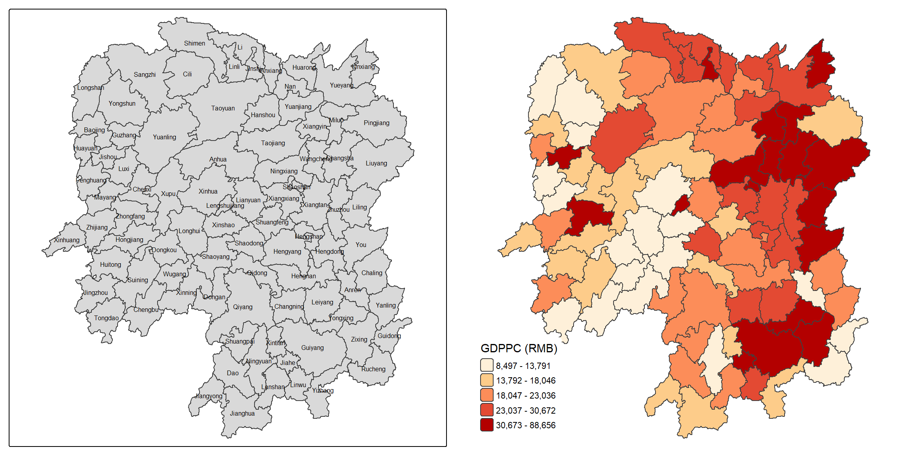
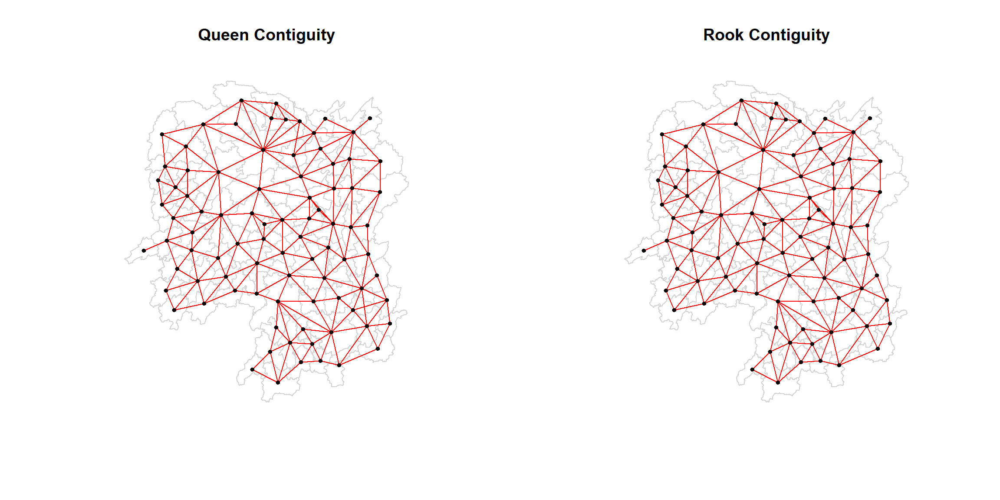
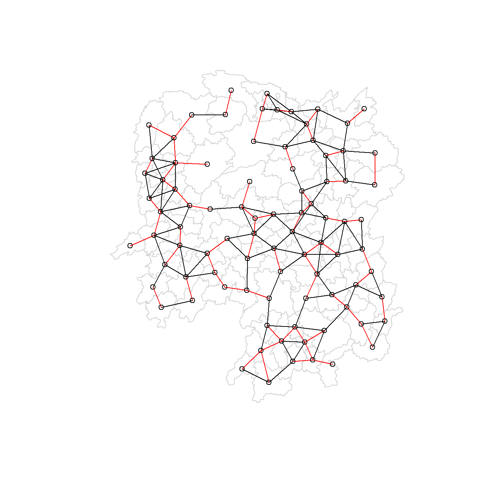
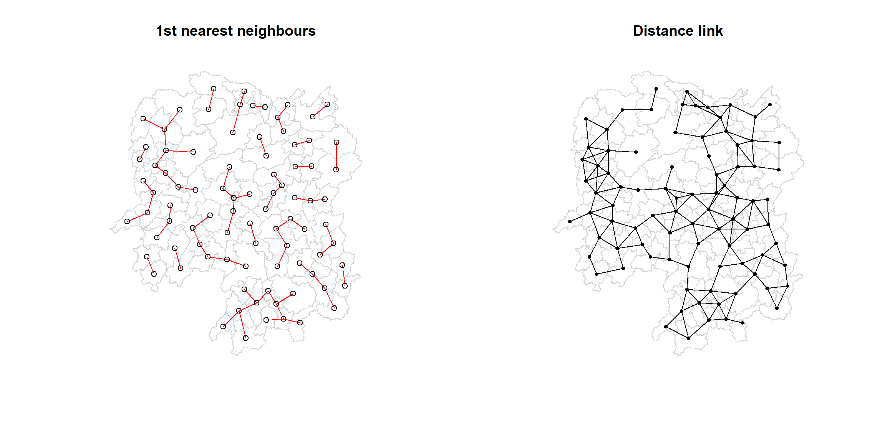
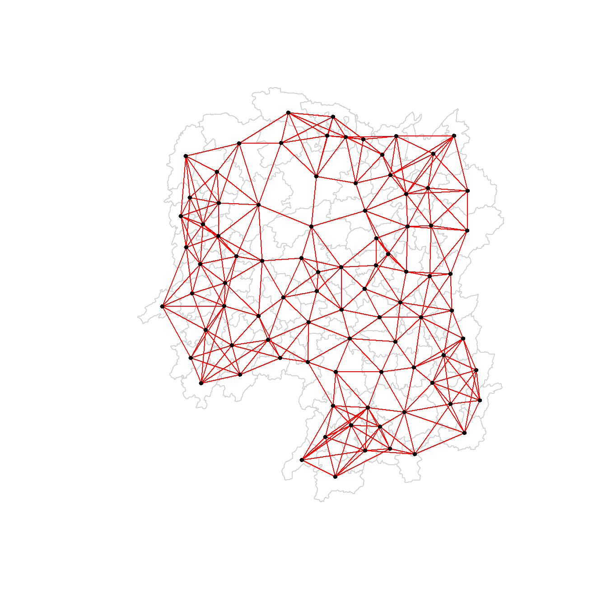
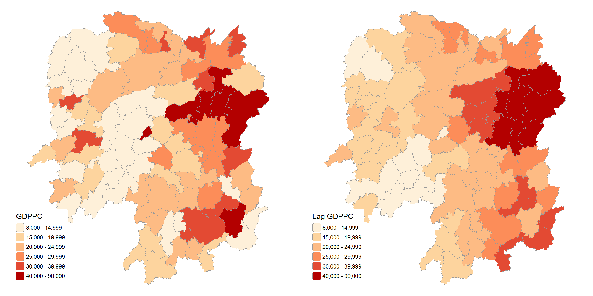
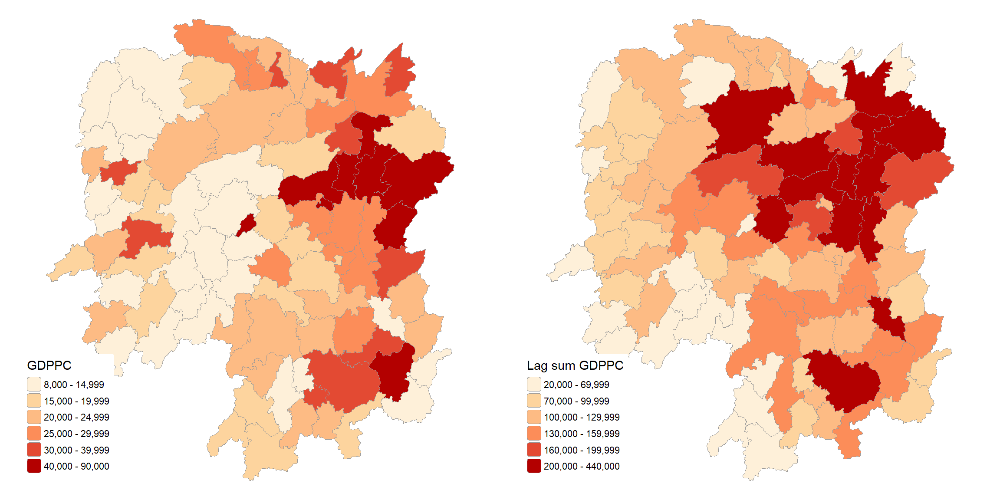
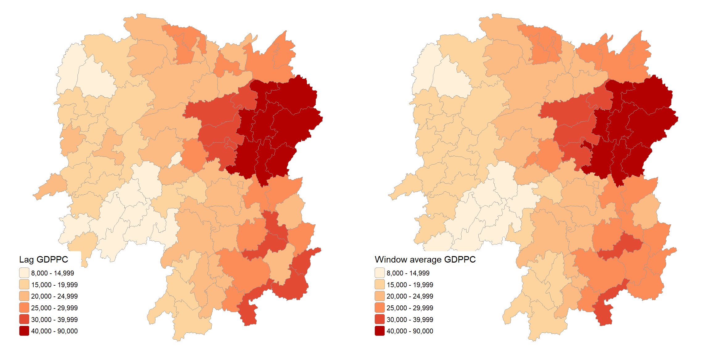
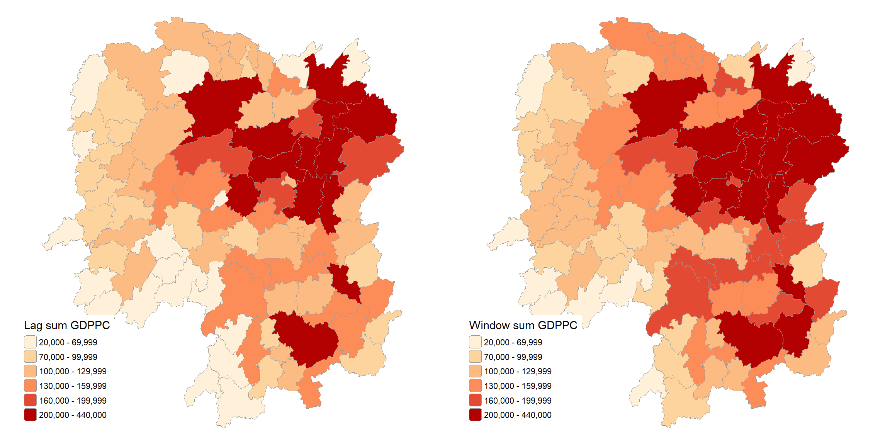

Show the code
pacman::p_load(sf, spdep, tmap, tidyverse, knitr)County-level GDP per capita in Hunan, 2012
Meng Tingyu
September 18, 2026
September 18, 2026
The last two exercises were about points, where every observation had its own exact location. This one moves to areal data, where the unit of observation is a polygon and the question becomes which polygons count as neighbours of each other. Almost every method later in the course, from Moran’s I to hot spot analysis to spatial regression, needs that neighbour structure written down first, and the spatial weights matrix is where it lives.
The study area is Hunan province in China, split into 88 county-level units. The variable I follow the whole way through is GDP per capita in 2012 (GDPPC, in RMB). I build neighbour lists in three different ways, contiguity, fixed distance and k nearest neighbours, turn them into weights, and then use the weights to compute four kinds of spatially lagged variables.
Five packages are used. sf handles the polygons, spdep builds the neighbour lists and weights, tmap draws the maps, tidyverse covers the joins and the map_dbl() call later on, and knitr is only there for kable().
The boundary layer is an ESRI shapefile. I keep it under data/geospatial like in the previous exercises instead of the chap08/data path the course notes use.
Reading layer `Hunan' from data source
`D:\mengtingyu88\geospatial-coursework\Hands-on_Ex\Hands-on_Ex04\data\geospatial'
using driver `ESRI Shapefile'
Simple feature collection with 88 features and 7 fields
Geometry type: POLYGON
Dimension: XY
Bounding box: xmin: 108.7831 ymin: 24.6342 xmax: 114.2544 ymax: 30.12812
Geodetic CRS: WGS 84There are 88 polygons and 7 attribute fields, and the coordinates are plain longitude and latitude in WGS 84. That last point matters later, because every distance calculation has to be told the coordinates are not projected.
The csv has 29 columns of county indicators. I only need GDPPC for this exercise, and the data dictionary that came with the files confirms it is GDP per capita in RMB.
The notes run left_join(hunan, hunan2012) without a by argument and then select(1:4, 7, 15). Both work, but both are fragile. Without by, dplyr joins on every column name the two tables happen to share, which today is only County, but it would quietly change if the csv ever gained a column with the same name as one in the shapefile. Selecting by position has the same problem, since columns 7 and 15 are County and GDPPC only because of the current column order in the csv. Naming both makes the intent readable and keeps it from breaking silently.
No county is left without a value after the join, so the names in the two files line up exactly.
Before building any weights I want to see what the variable looks like on the map, because the lagged versions later only make sense against this starting point.
Min. 1st Qu. Median Mean 3rd Qu. Max.
8497 14566 20433 24405 27224 88656 The spread is wide. The poorest county sits at 8,497 RMB and the richest at 88,656 RMB, more than ten times as much, and the mean is pulled well above the median by a handful of very rich counties.
basemap <- tm_shape(hunan) +
tm_polygons() +
tm_text("NAME_3", size = 0.5)
gdppc <- tm_shape(hunan) +
tm_polygons(fill = "GDPPC",
fill.scale = tm_scale_intervals(style = "quantile", n = 5,
values = "brewer.or_rd"),
fill.legend = tm_legend(title = "GDPPC (RMB)",
position = tm_pos_in("left", "bottom"),
frame = FALSE)) +
tm_layout(frame = FALSE)
tmap_arrange(basemap, gdppc, asp = 1, ncol = 2)
The course code is written for tmap v3, using qtm(hunan, "GDPPC") with tm_layout(legend.position = ...). On v4.4 the legend position belongs to the layer through fill.legend = tm_legend(position = tm_pos_in(...)), and I also switched from qtm() to tm_polygons() so I could set the classification explicitly. I used quantile classes here because with a variable this skewed, the default pretty breaks put most of the province into one or two colours.
The richest counties form a block in the east centre of the province around Changsha, Zhuzhou and Xiangtan, with Changsha itself at the top. A second group of fairly well off counties runs up to the north east around Yueyang, and there is another around Chenzhou in the south east. The whole western side, Xiangxi, Huaihua and most of Shaoyang, is in the lowest classes. A few counties break the pattern completely. Lengshuijiang and Zixing both sit above 60,000 RMB but are surrounded by much poorer neighbours, and those two will keep coming up once the lagged variables are computed.
poly2nb() builds a neighbour list from shared boundaries. The queen argument decides what counts as shared. With queen = TRUE, which is the default, two polygons are neighbours if they touch at even a single point. With queen = FALSE the rook rule applies and they must share an edge of some length.
Neighbour list object:
Number of regions: 88
Number of nonzero links: 448
Percentage nonzero weights: 5.785124
Average number of links: 5.090909
Link number distribution:
1 2 3 4 5 6 7 8 9 11
2 2 12 16 24 14 11 4 2 1
2 least connected regions:
30 65 with 1 link
1 most connected region:
85 with 11 linksAll 88 counties are in the list and there are 448 neighbour links in total, so the average county has about 5.09 neighbours. The distribution of link counts is fairly tight, with most counties having between 4 and 7 neighbours. Regions 30 and 65 are the least connected with one neighbour each, and region 85 is the most connected with 11.
The two single-neighbour counties are Xinhuang and Linxiang, and both sit on the provincial border. Xinhuang is on the far west edge next to Guizhou and Linxiang is in the north east corner next to Hubei and Jiangxi. They are not isolated in reality, it is just that their other neighbours are outside the study area. That edge effect is worth remembering, since any border county will look less connected than it really is. Taoyuan, with 11 neighbours, is simply a large county in the middle of the Changde area.
Each element of the neighbour list holds the row indices of that polygon’s neighbours.
Polygon 1 has five neighbours. To see which counties these are, I first check the name of polygon 1 itself and then look up the five indices.
So Anxiang borders Hanshou, Jinshi, Li, Nan and Taoyuan. The same indices can pull out the neighbours’ GDPPC.
These five values, 20981, 34592, 24473, 21311 and 22879, are what Anxiang’s spatial lag will be built from later on.
The whole list can be printed with str(). It is long, but I left it in because it is the most direct way to see that the object is nothing more than a list of integer vectors with a few attributes attached.
List of 88
$ : int [1:5] 2 3 4 57 85
$ : int [1:5] 1 57 58 78 85
$ : int [1:4] 1 4 5 85
$ : int [1:4] 1 3 5 6
$ : int [1:4] 3 4 6 85
$ : int [1:5] 4 5 69 75 85
$ : int [1:4] 67 71 74 84
$ : int [1:7] 9 46 47 56 78 80 86
$ : int [1:6] 8 66 68 78 84 86
$ : int [1:8] 16 17 19 20 22 70 72 73
$ : int [1:3] 14 17 72
$ : int [1:5] 13 60 61 63 83
$ : int [1:4] 12 15 60 83
$ : int [1:3] 11 15 17
$ : int [1:4] 13 14 17 83
$ : int [1:5] 10 17 22 72 83
$ : int [1:7] 10 11 14 15 16 72 83
$ : int [1:5] 20 22 23 77 83
$ : int [1:6] 10 20 21 73 74 86
$ : int [1:7] 10 18 19 21 22 23 82
$ : int [1:5] 19 20 35 82 86
$ : int [1:5] 10 16 18 20 83
$ : int [1:7] 18 20 38 41 77 79 82
$ : int [1:5] 25 28 31 32 54
$ : int [1:5] 24 28 31 33 81
$ : int [1:4] 27 33 42 81
$ : int [1:3] 26 29 42
$ : int [1:5] 24 25 33 49 54
$ : int [1:3] 27 37 42
$ : int 33
$ : int [1:8] 24 25 32 36 39 40 56 81
$ : int [1:8] 24 31 50 54 55 56 75 85
$ : int [1:5] 25 26 28 30 81
$ : int [1:3] 36 45 80
$ : int [1:6] 21 41 47 80 82 86
$ : int [1:6] 31 34 40 45 56 80
$ : int [1:4] 29 42 43 44
$ : int [1:4] 23 44 77 79
$ : int [1:5] 31 40 42 43 81
$ : int [1:6] 31 36 39 43 45 79
$ : int [1:6] 23 35 45 79 80 82
$ : int [1:7] 26 27 29 37 39 43 81
$ : int [1:6] 37 39 40 42 44 79
$ : int [1:4] 37 38 43 79
$ : int [1:6] 34 36 40 41 79 80
$ : int [1:3] 8 47 86
$ : int [1:5] 8 35 46 80 86
$ : int [1:5] 50 51 52 53 55
$ : int [1:4] 28 51 52 54
$ : int [1:5] 32 48 52 54 55
$ : int [1:3] 48 49 52
$ : int [1:5] 48 49 50 51 54
$ : int [1:3] 48 55 75
$ : int [1:6] 24 28 32 49 50 52
$ : int [1:5] 32 48 50 53 75
$ : int [1:7] 8 31 32 36 78 80 85
$ : int [1:6] 1 2 58 64 76 85
$ : int [1:5] 2 57 68 76 78
$ : int [1:4] 60 61 87 88
$ : int [1:4] 12 13 59 61
$ : int [1:7] 12 59 60 62 63 77 87
$ : int [1:3] 61 77 87
$ : int [1:4] 12 61 77 83
$ : int [1:2] 57 76
$ : int 76
$ : int [1:5] 9 67 68 76 84
$ : int [1:4] 7 66 76 84
$ : int [1:5] 9 58 66 76 78
$ : int [1:3] 6 75 85
$ : int [1:3] 10 72 73
$ : int [1:3] 7 73 74
$ : int [1:5] 10 11 16 17 70
$ : int [1:5] 10 19 70 71 74
$ : int [1:6] 7 19 71 73 84 86
$ : int [1:6] 6 32 53 55 69 85
$ : int [1:7] 57 58 64 65 66 67 68
$ : int [1:7] 18 23 38 61 62 63 83
$ : int [1:7] 2 8 9 56 58 68 85
$ : int [1:7] 23 38 40 41 43 44 45
$ : int [1:8] 8 34 35 36 41 45 47 56
$ : int [1:6] 25 26 31 33 39 42
$ : int [1:5] 20 21 23 35 41
$ : int [1:9] 12 13 15 16 17 18 22 63 77
$ : int [1:6] 7 9 66 67 74 86
$ : int [1:11] 1 2 3 5 6 32 56 57 69 75 ...
$ : int [1:9] 8 9 19 21 35 46 47 74 84
$ : int [1:4] 59 61 62 88
$ : int [1:2] 59 87
- attr(*, "class")= chr "nb"
- attr(*, "region.id")= chr [1:88] "1" "2" "3" "4" ...
- attr(*, "call")= language poly2nb(pl = hunan, queen = TRUE)
- attr(*, "type")= chr "queen"
- attr(*, "snap")= num 9e-08
- attr(*, "sym")= logi TRUE
- attr(*, "ncomp")=List of 2
..$ nc : num 1
..$ comp.id: num [1:88] 1 1 1 1 1 1 1 1 1 1 ...The attributes at the bottom say the list is of type queen, is symmetric, and forms one connected component covering all 88 counties.
Neighbour list object:
Number of regions: 88
Number of nonzero links: 440
Percentage nonzero weights: 5.681818
Average number of links: 5
Link number distribution:
1 2 3 4 5 6 7 8 9 10
2 2 12 20 21 14 11 3 2 1
2 least connected regions:
30 65 with 1 link
1 most connected region:
85 with 10 linksThe rook version has 440 links instead of 448 and an average of exactly 5 neighbours. Xinhuang and Linxiang still have one neighbour each and Taoyuan is still the most connected, but now with 10.
Eight links is a small difference, and since every link is stored in both directions it really means four pairs of counties. I wanted to know which ones they are.
| County | Neighbour under queen only |
|---|---|
| Anxiang | Hanshou |
| Hanshou | Anxiang |
| Anren | Zixing |
| Yongxing | Yanling |
| Zixing | Anren |
| Nan | Taoyuan |
| Yanling | Yongxing |
| Taoyuan | Nan |
The four pairs are Anxiang and Hanshou, Anren and Zixing, Yongxing and Yanling, and Nan and Taoyuan. Each of these pairs only meets at a corner point, which is why the rook rule drops them. The Nan and Taoyuan pair explains why Taoyuan falls from 11 to 10 neighbours. For county boundaries drawn along rivers and ridges, true corner contacts like these are rare, so the choice between queen and rook barely matters for Hunan.
A connectivity graph draws a line from each polygon to each of its neighbours, so it needs a point to represent every polygon. The usual choice is the centroid.
The course text talks about mapping st_centroid over the geometry column of us.bound. That object does not exist anywhere in this exercise. The explanation seems to have been copied from a US example, and the code itself correctly uses hunan$geometry, so I just followed the code.
map_dbl() from purrr applies st_centroid() to each geometry in turn and returns a numeric vector. Taking element [[1]] of each centroid gives the longitude, and [[2]] gives the latitude.
cbind() puts the two into a single matrix.
longitude latitude
[1,] 112.1531 29.44362
[2,] 112.0372 28.86489
[3,] 111.8917 29.47107
[4,] 111.7031 29.74499
[5,] 111.6138 29.49258
[6,] 111.0341 29.79863The first row, 112.15 E and 29.44 N, is Anxiang, which is where it should be in the north of the province.
I tried st_coordinates(st_centroid(hunan)) as a shortcut. Because the layer is in geographic coordinates and s2 is on by default, sf computes that one on the sphere, while st_centroid() on a single geometry (the .x inside map_dbl()) is planar. The two sets of centroids are close but not identical, and even a small shift would stop the later output from matching the course, so I kept the course method.

Side by side, the two graphs are almost impossible to tell apart. Knowing where to look helps, for example the short diagonal link between Anxiang and Hanshou at the top of the Changde area is there on the left and missing on the right. The graphs also show the connectivity is fairly even across the province, because county sizes in Hunan do not vary that much.
Contiguity is the simplest definition of a neighbour and it needs no parameters, which is its main appeal. What surprised me is how much of the structure is set by the study area boundary rather than by geography. The two least connected counties are only least connected because the data stops at the provincial line.
dnearneigh() defines neighbours as every point within a distance band between a lower bound d1 and an upper bound d2. When the coordinates are longitude and latitude and longlat = TRUE is set, the distances are great circle distances in kilometres on the WGS 84 ellipsoid.
If the upper bound is too small, some counties end up with no neighbours at all. A safe choice is the largest distance any county has to its single nearest neighbour, which guarantees everyone gets at least one. Four steps get there. knearneigh() finds the nearest neighbour of each point, knn2nb() turns that into a neighbour list, nbdists() returns the length of each link, and unlist() flattens the result into a plain vector.
Min. 1st Qu. Median Mean 3rd Qu. Max.
24.79 32.57 38.01 39.07 44.52 61.79 The nearest neighbour distances run from 24.79 km to 61.79 km, with a median of 38.01 km. Rounding the maximum up to 62 km gives the cut-off.
[1] "Taoyuan" "Linli" The longest of these first neighbour links belongs to Taoyuan, whose nearest neighbour was found to be Linli.
nbdists() gets longlat = TRUE, but knearneigh() in the line above it does not. Since coords is a plain matrix, knearneigh() assumes the numbers are planar and ranks neighbours by straight line distance in degrees. At Hunan’s latitude one degree of longitude is roughly 88 percent of a degree of latitude, so an east west neighbour can look further away than it really is. I reran the step with longlat = TRUE to see if it changes anything.
Min. 1st Qu. Median Mean 3rd Qu. Max.
24.79 32.57 38.01 38.88 44.52 58.39 | County | Nearest in degrees | Nearest by great circle |
|---|---|---|
| Linli | Li | Jinshi |
| Liuyang | Pingjiang | Changsha |
| Chenxi | Luxi | Xupu |
| Jianghua | Dao | Jiangyong |
| Pingjiang | Liuyang | Miluo |
| Taoyuan | Linli | Hanshou |
It does. 6 counties get a different nearest neighbour, and the largest nearest neighbour distance drops to 58.39 km, which belongs to Yuanling. For this exercise it makes no practical difference, because 62 km still covers every county either way. It would matter in a case where the cut-off is tight, so from now on I would pass longlat = TRUE to both functions.
Neighbour list object:
Number of regions: 88
Number of nonzero links: 324
Percentage nonzero weights: 4.183884
Average number of links: 3.681818 The course asks what the average number of links of 3.681818 means. The list has 324 links spread over 88 counties, and 324 divided by 88 is 3.68, so within 62 km a county has on average 3.68 other county centroids. That is noticeably fewer than the 5.09 neighbours under queen contiguity. The 62 km threshold was chosen only to make sure nobody is left out, not to match the contiguity structure, and many counties that share a border have centroids further apart than that.
List of 88
$ : int [1:5] 3 4 5 57 64
$ : int [1:4] 57 58 78 85
$ : int [1:4] 1 4 5 57
$ : int [1:3] 1 3 5
$ : int [1:4] 1 3 4 85
$ : int 69
$ : int [1:2] 67 84
$ : int [1:4] 9 46 47 78
$ : int [1:4] 8 46 68 84
$ : int [1:4] 16 22 70 72
$ : int [1:3] 14 17 72
$ : int [1:5] 13 60 61 63 83
$ : int [1:4] 12 15 60 83
$ : int [1:2] 11 17
$ : int 13
$ : int [1:4] 10 17 22 83
$ : int [1:3] 11 14 16
$ : int [1:3] 20 22 63
$ : int [1:5] 20 21 73 74 82
$ : int [1:5] 18 19 21 22 82
$ : int [1:6] 19 20 35 74 82 86
$ : int [1:4] 10 16 18 20
$ : int [1:3] 41 77 82
$ : int [1:4] 25 28 31 54
$ : int [1:4] 24 28 33 81
$ : int [1:4] 27 33 42 81
$ : int [1:2] 26 29
$ : int [1:6] 24 25 33 49 52 54
$ : int [1:2] 27 37
$ : int 33
$ : int [1:2] 24 36
$ : int 50
$ : int [1:5] 25 26 28 30 81
$ : int [1:3] 36 45 80
$ : int [1:6] 21 41 46 47 80 82
$ : int [1:5] 31 34 45 56 80
$ : int [1:2] 29 42
$ : int [1:3] 44 77 79
$ : int [1:4] 40 42 43 81
$ : int [1:3] 39 45 79
$ : int [1:5] 23 35 45 79 82
$ : int [1:5] 26 37 39 43 81
$ : int [1:3] 39 42 44
$ : int [1:2] 38 43
$ : int [1:6] 34 36 40 41 79 80
$ : int [1:5] 8 9 35 47 86
$ : int [1:5] 8 35 46 80 86
$ : int [1:5] 50 51 52 53 55
$ : int [1:4] 28 51 52 54
$ : int [1:6] 32 48 51 52 54 55
$ : int [1:4] 48 49 50 52
$ : int [1:6] 28 48 49 50 51 54
$ : int [1:2] 48 55
$ : int [1:5] 24 28 49 50 52
$ : int [1:4] 48 50 53 75
$ : int 36
$ : int [1:5] 1 2 3 58 64
$ : int [1:5] 2 57 64 66 68
$ : int [1:3] 60 87 88
$ : int [1:4] 12 13 59 61
$ : int [1:5] 12 60 62 63 87
$ : int [1:4] 61 63 77 87
$ : int [1:5] 12 18 61 62 83
$ : int [1:4] 1 57 58 76
$ : int 76
$ : int [1:5] 58 67 68 76 84
$ : int [1:2] 7 66
$ : int [1:4] 9 58 66 84
$ : int [1:2] 6 75
$ : int [1:3] 10 72 73
$ : int [1:2] 73 74
$ : int [1:3] 10 11 70
$ : int [1:4] 19 70 71 74
$ : int [1:5] 19 21 71 73 86
$ : int [1:2] 55 69
$ : int [1:3] 64 65 66
$ : int [1:3] 23 38 62
$ : int [1:2] 2 8
$ : int [1:4] 38 40 41 45
$ : int [1:5] 34 35 36 45 47
$ : int [1:5] 25 26 33 39 42
$ : int [1:6] 19 20 21 23 35 41
$ : int [1:4] 12 13 16 63
$ : int [1:4] 7 9 66 68
$ : int [1:2] 2 5
$ : int [1:4] 21 46 47 74
$ : int [1:4] 59 61 62 88
$ : int [1:2] 59 87
- attr(*, "class")= chr "nb"
- attr(*, "region.id")= chr [1:88] "1" "2" "3" "4" ...
- attr(*, "call")= language dnearneigh(x = coords, d1 = 0, d2 = 62, longlat = TRUE)
- attr(*, "dnn")= num [1:2] 0 62
- attr(*, "bounds")= chr [1:2] "GE" "LE"
- attr(*, "nbtype")= chr "distance"
- attr(*, "sym")= logi TRUE
- attr(*, "ncomp")=List of 2
..$ nc : num 1
..$ comp.id: num [1:88] 1 1 1 1 1 1 1 1 1 1 ...The attributes record the distance band from 0 to 62, with both bounds inclusive (“GE” and “LE”), and the list is symmetric, which a distance band always is.
Another way to look at the structure is to cross tabulate each county against its number of neighbours with card().
1 2 3 4 5 6
Anhua 1 0 0 0 0 0
Anren 0 0 0 1 0 0
Anxiang 0 0 0 0 1 0
Baojing 0 0 0 0 1 0
Chaling 0 0 1 0 0 0
Changning 0 0 1 0 0 0
Changsha 0 0 0 1 0 0
Chengbu 0 1 0 0 0 0
Chenxi 0 0 0 1 0 0
Cili 0 1 0 0 0 0
Dao 0 0 0 1 0 0
Dongan 0 0 1 0 0 0
Dongkou 0 0 0 1 0 0
Fenghuang 0 0 0 1 0 0
Guidong 0 0 1 0 0 0
Guiyang 0 0 0 1 0 0
Guzhang 0 0 0 0 0 1
Hanshou 0 0 0 1 0 0
Hengdong 0 0 0 0 1 0
Hengnan 0 0 0 0 1 0
Hengshan 0 0 0 0 0 1
Hengyang 0 0 0 0 0 1
Hongjiang 0 0 0 0 1 0
Huarong 0 0 0 1 0 0
Huayuan 0 0 0 1 0 0
Huitong 0 0 0 1 0 0
Jiahe 0 0 0 0 1 0
Jianghua 0 0 1 0 0 0
Jiangyong 0 1 0 0 0 0
Jingzhou 0 1 0 0 0 0
Jinshi 0 0 0 1 0 0
Jishou 0 0 0 0 0 1
Lanshan 0 0 0 1 0 0
Leiyang 0 0 0 1 0 0
Lengshuijiang 0 0 1 0 0 0
Li 0 0 1 0 0 0
Lianyuan 0 0 0 0 1 0
Liling 0 1 0 0 0 0
Linli 0 0 0 1 0 0
Linwu 0 0 0 1 0 0
Linxiang 1 0 0 0 0 0
Liuyang 0 1 0 0 0 0
Longhui 0 0 1 0 0 0
Longshan 0 1 0 0 0 0
Luxi 0 0 0 0 1 0
Mayang 0 0 0 0 0 1
Miluo 0 0 0 0 1 0
Nan 0 0 0 0 1 0
Ningxiang 0 0 0 1 0 0
Ningyuan 0 0 0 0 1 0
Pingjiang 0 1 0 0 0 0
Qidong 0 0 1 0 0 0
Qiyang 0 0 1 0 0 0
Rucheng 0 1 0 0 0 0
Sangzhi 0 1 0 0 0 0
Shaodong 0 0 0 0 1 0
Shaoshan 0 0 0 0 1 0
Shaoyang 0 0 0 1 0 0
Shimen 1 0 0 0 0 0
Shuangfeng 0 0 0 0 0 1
Shuangpai 0 0 0 1 0 0
Suining 0 0 0 0 1 0
Taojiang 0 1 0 0 0 0
Taoyuan 0 1 0 0 0 0
Tongdao 0 1 0 0 0 0
Wangcheng 0 0 0 1 0 0
Wugang 0 0 1 0 0 0
Xiangtan 0 0 0 1 0 0
Xiangxiang 0 0 0 0 1 0
Xiangyin 0 0 0 1 0 0
Xinhua 0 0 0 0 1 0
Xinhuang 1 0 0 0 0 0
Xinning 0 1 0 0 0 0
Xinshao 0 0 0 0 0 1
Xintian 0 0 0 0 1 0
Xupu 0 1 0 0 0 0
Yanling 0 0 1 0 0 0
Yizhang 1 0 0 0 0 0
Yongshun 0 0 0 1 0 0
Yongxing 0 0 0 1 0 0
You 0 0 0 1 0 0
Yuanjiang 0 0 0 0 1 0
Yuanling 1 0 0 0 0 0
Yueyang 0 0 1 0 0 0
Zhijiang 0 0 0 0 1 0
Zhongfang 0 0 0 1 0 0
Zhuzhou 0 0 0 0 1 0
Zixing 0 0 1 0 0 0That table is hard to read with 88 rows, so I also collapsed it into counts.
Six counties have exactly one neighbour within 62 km, namely Anhua, Linxiang, Shimen, Xinhuang, Yizhang and Yuanling, while seven have six. The single neighbour group is mostly large counties or counties on the provincial edge, where centroids are naturally far apart. The six neighbour group includes places like Hengyang, Hengshan and Shuangfeng in the middle of the province, and Jishou, Guzhang and Mayang in the west, where the counties are small and packed together.
There is one connected component containing all 88 counties, so even with a thin neighbour structure, every county can be reached from every other by following links.

The red lines are the first nearest neighbour links and the black lines are all links within 62 km. Drawn on top of each other it is hard to separate them, so here they are side by side.

The nearest neighbour graph on the left is a set of small disconnected fragments, since every county only points to one other. The 62 km graph on the right fills in, but it is visibly patchier than the contiguity graph. The dense patches are where counties are small, and the sparse gaps are around the big counties such as Yuanling and Anhua.
The trouble with a fixed distance is what the course notes point out. Where polygons are small and close together, each one gets many neighbours, and where they are large, each gets very few. Fixing the number of neighbours instead of the distance avoids that, which is what k nearest neighbours does.
Neighbour list object:
Number of regions: 88
Number of nonzero links: 528
Percentage nonzero weights: 6.818182
Average number of links: 6
Non-symmetric neighbours listEvery county now has exactly six neighbours, 528 links in total, but the output also says the list is non-symmetric. Being one of my six nearest does not make me one of yours.
List of 88
$ : int [1:6] 2 3 4 5 57 64
$ : int [1:6] 1 3 57 58 78 85
$ : int [1:6] 1 2 4 5 57 85
$ : int [1:6] 1 3 5 6 69 85
$ : int [1:6] 1 3 4 6 69 85
$ : int [1:6] 3 4 5 69 75 85
$ : int [1:6] 9 66 67 71 74 84
$ : int [1:6] 9 46 47 78 80 86
$ : int [1:6] 8 46 66 68 84 86
$ : int [1:6] 16 19 22 70 72 73
$ : int [1:6] 10 14 16 17 70 72
$ : int [1:6] 13 15 60 61 63 83
$ : int [1:6] 12 15 60 61 63 83
$ : int [1:6] 11 15 16 17 72 83
$ : int [1:6] 12 13 14 17 60 83
$ : int [1:6] 10 11 17 22 72 83
$ : int [1:6] 10 11 14 16 72 83
$ : int [1:6] 20 22 23 63 77 83
$ : int [1:6] 10 20 21 73 74 82
$ : int [1:6] 18 19 21 22 23 82
$ : int [1:6] 19 20 35 74 82 86
$ : int [1:6] 10 16 18 19 20 83
$ : int [1:6] 18 20 41 77 79 82
$ : int [1:6] 25 28 31 52 54 81
$ : int [1:6] 24 28 31 33 54 81
$ : int [1:6] 25 27 29 33 42 81
$ : int [1:6] 26 29 30 37 42 81
$ : int [1:6] 24 25 33 49 52 54
$ : int [1:6] 26 27 37 42 43 81
$ : int [1:6] 26 27 28 33 49 81
$ : int [1:6] 24 25 36 39 40 54
$ : int [1:6] 24 31 50 54 55 56
$ : int [1:6] 25 26 28 30 49 81
$ : int [1:6] 36 40 41 45 56 80
$ : int [1:6] 21 41 46 47 80 82
$ : int [1:6] 31 34 40 45 56 80
$ : int [1:6] 26 27 29 42 43 44
$ : int [1:6] 23 43 44 62 77 79
$ : int [1:6] 25 40 42 43 44 81
$ : int [1:6] 31 36 39 43 45 79
$ : int [1:6] 23 35 45 79 80 82
$ : int [1:6] 26 27 37 39 43 81
$ : int [1:6] 37 39 40 42 44 79
$ : int [1:6] 37 38 39 42 43 79
$ : int [1:6] 34 36 40 41 79 80
$ : int [1:6] 8 9 35 47 78 86
$ : int [1:6] 8 21 35 46 80 86
$ : int [1:6] 49 50 51 52 53 55
$ : int [1:6] 28 33 48 51 52 54
$ : int [1:6] 32 48 51 52 54 55
$ : int [1:6] 28 48 49 50 52 54
$ : int [1:6] 28 48 49 50 51 54
$ : int [1:6] 48 50 51 52 55 75
$ : int [1:6] 24 28 49 50 51 52
$ : int [1:6] 32 48 50 52 53 75
$ : int [1:6] 32 34 36 78 80 85
$ : int [1:6] 1 2 3 58 64 68
$ : int [1:6] 2 57 64 66 68 78
$ : int [1:6] 12 13 60 61 87 88
$ : int [1:6] 12 13 59 61 63 87
$ : int [1:6] 12 13 60 62 63 87
$ : int [1:6] 12 38 61 63 77 87
$ : int [1:6] 12 18 60 61 62 83
$ : int [1:6] 1 3 57 58 68 76
$ : int [1:6] 58 64 66 67 68 76
$ : int [1:6] 9 58 67 68 76 84
$ : int [1:6] 7 65 66 68 76 84
$ : int [1:6] 9 57 58 66 78 84
$ : int [1:6] 4 5 6 32 75 85
$ : int [1:6] 10 16 19 22 72 73
$ : int [1:6] 7 19 73 74 84 86
$ : int [1:6] 10 11 14 16 17 70
$ : int [1:6] 10 19 21 70 71 74
$ : int [1:6] 19 21 71 73 84 86
$ : int [1:6] 6 32 50 53 55 69
$ : int [1:6] 58 64 65 66 67 68
$ : int [1:6] 18 23 38 61 62 63
$ : int [1:6] 2 8 9 46 58 68
$ : int [1:6] 38 40 41 43 44 45
$ : int [1:6] 34 35 36 41 45 47
$ : int [1:6] 25 26 28 33 39 42
$ : int [1:6] 19 20 21 23 35 41
$ : int [1:6] 12 13 15 16 22 63
$ : int [1:6] 7 9 66 68 71 74
$ : int [1:6] 2 3 4 5 56 69
$ : int [1:6] 8 9 21 46 47 74
$ : int [1:6] 59 60 61 62 63 88
$ : int [1:6] 59 60 61 62 63 87
- attr(*, "region.id")= chr [1:88] "1" "2" "3" "4" ...
- attr(*, "call")= language knearneigh(x = coords, k = 6)
- attr(*, "sym")= logi FALSE
- attr(*, "type")= chr "knn"
- attr(*, "knn-k")= num 6
- attr(*, "class")= chr "nb"
- attr(*, "ncomp")=List of 2
..$ nc : num 1
..$ comp.id: num [1:88] 1 1 1 1 1 1 1 1 1 1 ...The notes mention that symmetry can be imposed, but the code does not show it, so I tried it.
Neighbour list object:
Number of regions: 88
Number of nonzero links: 610
Percentage nonzero weights: 7.877066
Average number of links: 6.931818 With sym = TRUE, any one-way link is made two-way, so the number of links rises and the average goes up to 6.93. The guarantee of exactly six is gone, but the list becomes symmetric, which some later methods prefer.
To see how lopsided the plain version is, I counted how often each county appears in someone else’s list of six.
Min. 1st Qu. Median Mean 3rd Qu. Max.
2.00 5.00 6.00 6.00 7.25 10.00 A county is picked by as few as 2 others (Xinhuang, Linxiang, Jiangyong) and by as many as 10 (Xintian, Xiangyin). Counties on the edge tend to be picked rarely because they have nobody on their outer side, while counties with many small counties around them get picked a lot.

This graph is the densest of all so far and the most even. Around the western edge, some links now reach quite far across other counties just to make up the count of six.
Fixed distance and k nearest neighbours trade off different things. The fixed band keeps the meaning of “neighbour” constant in kilometres but lets the number of neighbours swing from one to six. k nearest keeps the number constant but lets the distance stretch, and it gives up symmetry. Neither is right in general, and for Hunan, where county sizes are fairly similar, contiguity already does a reasonable job of both.
Everything so far only says whether two counties are neighbours. Inverse distance weighting also says how strong the relationship is, by giving closer neighbours more weight. I kept the queen neighbour list and replaced each link with one over its length.
The full ids list has 88 elements, so I only print the first five to show the structure.
[[1]]
[1] 0.01535405 0.03916350 0.01820896 0.02807922 0.01145113
[[2]]
[1] 0.01535405 0.01764308 0.01925924 0.02323898 0.01719350
[[3]]
[1] 0.03916350 0.02822040 0.03695795 0.01395765
[[4]]
[1] 0.01820896 0.02822040 0.03414741 0.01539065
[[5]]
[1] 0.03695795 0.03414741 0.01524598 0.01618354Anxiang’s five values match its five queen neighbours in order. The largest, 0.039, is Jinshi, which is only about 25.5 km away, while Taoyuan at 0.011 is the furthest at about 87 km. The unit here is inverse kilometres, so the numbers are small, but only their relative size matters.
A neighbour list still needs weights before it can be used. The most common choice is style = "W", which gives each neighbour of a county the same share, one over the number of neighbours, so every row sums to 1. The spatial lag then becomes a simple average of the neighbours’ values. The drawback the notes mention is that border counties average over fewer neighbours, which could over or under state the relationship at the edges. style = "B" is the binary alternative.
Characteristics of weights list object:
Neighbour list object:
Number of regions: 88
Number of nonzero links: 448
Percentage nonzero weights: 5.785124
Average number of links: 5.090909
Weights style: W
Weights constants summary:
n nn S0 S1 S2
W 88 7744 88 37.86334 365.9147In the constants summary, n is the number of counties and nn is n squared. S0 is the sum of all weights, which is exactly 88 here because each of the 88 rows sums to 1. S1 and S2 are sums of squared weights that the Moran’s I variance formula will use in the next chapter.
zero.policy = TRUE lets nb2listw() accept counties with no neighbours instead of stopping with an error. Queen contiguity for Hunan has no such county, so here it makes no difference. I think the default error is actually the safer behaviour, because a county with no neighbours usually means something went wrong with the geometry, and it is better to find out.
The notes say this shows “the first polygon’s eight neighbors”, but the code indexes element 10. Polygon 1, Anxiang, only has five neighbours. Element 10 is Anren, which has eight, so each gets 0.125, and when the lag is computed each of Anren’s neighbours will contribute one eighth of its GDPPC.
The same approach produces a distance weighted version by passing ids through glist.
Characteristics of weights list object:
Neighbour list object:
Number of regions: 88
Number of nonzero links: 448
Percentage nonzero weights: 5.785124
Average number of links: 5.090909
Weights style: B
Weights constants summary:
n nn S0 S1 S2
B 88 7744 8.786867 0.3776535 3.8137 Min. 1st Qu. Median Mean 3rd Qu. Max.
0.008218 0.015088 0.018739 0.019614 0.022823 0.040338 The weights run from 0.0082 to 0.0403. In kilometre terms that is a range from about 122 km, between Sangzhi and Taoyuan, down to about 25 km, between Shaoshan and Xiangxiang.
The notes call rswm_ids a row standardised distance weight matrix, but style = "B" keeps the weights exactly as supplied. The printed weights for Anxiang are identical to ids[[1]], and S0 is 8.79 rather than 88, so the rows clearly do not sum to 1. To actually row standardise inverse distance weights, the style has to be "W".
[1] 0.137 0.349 0.162 0.250 0.102 Min. 1st Qu. Median Mean 3rd Qu. Max.
1 1 1 1 1 1 Now every row sums to 1, and Anxiang’s weights are no longer equal. Jinshi, the nearest, takes about 35 percent of the total and Taoyuan, the furthest, about 10 percent, instead of 20 percent each under plain "W".
With weights in hand, the neighbour structure can be applied to a variable. I computed four versions for GDPPC.
For comparing maps I set up a small helper with fixed class breaks. The notes point out that qtm() is not ideal for comparison, and the main reason is that each map gets its own classification, so the same colour means a different value on each map. Fixing the breaks keeps the colours comparable.
avg_breaks <- c(8000, 15000, 20000, 25000, 30000, 40000, 90000)
sum_breaks <- c(20000, 70000, 100000, 130000, 160000, 200000, 440000)
map_var <- function(var, title, breaks) {
tm_shape(hunan) +
tm_polygons(fill = var,
fill.scale = tm_scale_intervals(breaks = breaks,
values = "brewer.or_rd"),
fill.legend = tm_legend(title = title,
position = tm_pos_in("left", "bottom"),
frame = FALSE),
col = "grey60", lwd = 0.3) +
tm_layout(frame = FALSE)
}The course names the new columns lag GDPPC, lag_sum GDPPC and so on, with a space in the middle. R accepts that, but every later reference then needs backticks or quotes, and it is easy to get wrong. I used underscores throughout, lag_GDPPC, lag_sum_GDPPC, w_avg_GDPPC and w_sum_GDPPC.
lag.listw() multiplies the weights by the variable, which with row-standardised weights gives the average GDPPC of each county’s neighbours.
[1] 24847.20 22724.80 24143.25 27737.50 27270.25 21248.80 43747.00 33582.71
[9] 45651.17 32027.62 32671.00 20810.00 25711.50 30672.33 33457.75 31689.20
[17] 20269.00 23901.60 25126.17 21903.43 22718.60 25918.80 20307.00 20023.80
[25] 16576.80 18667.00 14394.67 19848.80 15516.33 20518.00 17572.00 15200.12
[33] 18413.80 14419.33 24094.50 22019.83 12923.50 14756.00 13869.80 12296.67
[41] 15775.17 14382.86 11566.33 13199.50 23412.00 39541.00 36186.60 16559.60
[49] 20772.50 19471.20 19827.33 15466.80 12925.67 18577.17 14943.00 24913.00
[57] 25093.00 24428.80 17003.00 21143.75 20435.00 17131.33 24569.75 23835.50
[65] 26360.00 47383.40 55157.75 37058.00 21546.67 23348.67 42323.67 28938.60
[73] 25880.80 47345.67 18711.33 29087.29 20748.29 35933.71 15439.71 29787.50
[81] 18145.00 21617.00 29203.89 41363.67 22259.09 44939.56 16902.00 16930.00The course then asks whether the meaning of this lag is clear now. The first value makes it easy to check by hand. Anxiang’s five neighbours have GDPPC of 20981, 34592, 24473, 21311 and 22879, which add up to 124,236, and dividing by five gives 24,847.2, exactly the first value above. So the lag is simply what a typical neighbour of the county earns, with the county’s own value left out.
Simple feature collection with 6 features and 7 fields
Geometry type: POLYGON
Dimension: XY
Bounding box: xmin: 110.4922 ymin: 28.61762 xmax: 112.3013 ymax: 30.12812
Geodetic CRS: WGS 84
NAME_2 ID_3 NAME_3 ENGTYPE_3 County GDPPC lag_GDPPC
1 Changde 21098 Anxiang County Anxiang 23667 24847.20
2 Changde 21100 Hanshou County Hanshou 20981 22724.80
3 Changde 21101 Jinshi County City Jinshi 34592 24143.25
4 Changde 21102 Li County Li 24473 27737.50
5 Changde 21103 Linli County Linli 25554 27270.25
6 Changde 21104 Shimen County Shimen 27137 21248.80
geometry
1 POLYGON ((112.0625 29.75523...
2 POLYGON ((112.2288 29.11684...
3 POLYGON ((111.8927 29.6013,...
4 POLYGON ((111.3731 29.94649...
5 POLYGON ((111.6324 29.76288...
6 POLYGON ((110.8825 30.11675...For the first six counties, which all belong to Changde, own GDPPC and neighbour average are fairly close. Jinshi is the exception, at 34,592 against a neighbour average of 24,143.

The lagged map is much smoother. The east centre block around Changsha, Zhuzhou and Xiangtan becomes one continuous area in the top classes, the north east around Yueyang joins it, and the west turns into an almost uniform band of low values. The isolated rich counties disappear, since their own value is not part of their lag.
| variable | sd | min | max |
|---|---|---|---|
| GDPPC | 14994 | 8497 | 88656 |
| lag_GDPPC | 9306 | 11566 | 55158 |
The standard deviation falls from about 15,000 to about 9,300, and the top value drops from 88,656 to 55,158. Averaging over neighbours pulls extremes toward the middle, which is what the smoother map shows.
The most interesting counties are the ones where own value and lag disagree most.
| County | NAME_2 | GDPPC | lag_GDPPC | gap |
|---|---|---|---|---|
| Pingjiang | Yueyang | 17252 | 55158 | -37906 |
| Guidong | Chenzhou | 8497 | 32671 | -24174 |
| Zhuzhou | Zhuzhou | 27589 | 47346 | -19757 |
| Zixing | Chenzhou | 65706 | 20269 | 45437 |
| Changsha | Changsha | 88656 | 41364 | 47292 |
| Lengshuijiang | Loudi | 64257 | 14419 | 49838 |
Pingjiang has the highest lag in the whole province at 55,158, even though its own GDPPC is only 17,252. It sits next to Changsha, Liuyang, Miluo and Yueyang, so it is a poor county surrounded by rich ones. Lengshuijiang is the opposite case, earning 64,257 while its neighbours average only 14,419. Changsha and Zixing are also far above their surroundings, but for Changsha the neighbours are rich as well, so the gap looks large mostly because Changsha itself is so extreme.
The correlation between a county’s GDPPC and its neighbours’ average is about 0.48. Rich counties tend to have rich neighbours, which is the first hint of positive spatial autocorrelation that the next exercise will test properly.
With binary weights of 1 for every neighbour, the lag becomes a sum instead of an average. lapply() goes through the queen list and replaces every neighbour index with 1, and nb2listw() takes that through glist.
Characteristics of weights list object:
Neighbour list object:
Number of regions: 88
Number of nonzero links: 448
Percentage nonzero weights: 5.785124
Average number of links: 5.090909
Weights style: B
Weights constants summary:
n nn S0 S1 S2
B 88 7744 448 896 10224S0 is now 448, simply the number of links, since each carries a weight of 1.
[[1]]
[1] "Anxiang" "Hanshou" "Jinshi" "Li"
[5] "Linli" "Shimen" "Liuyang" "Ningxiang"
[9] "Wangcheng" "Anren" "Guidong" "Jiahe"
[13] "Linwu" "Rucheng" "Yizhang" "Yongxing"
[17] "Zixing" "Changning" "Hengdong" "Hengnan"
[21] "Hengshan" "Leiyang" "Qidong" "Chenxi"
[25] "Zhongfang" "Huitong" "Jingzhou" "Mayang"
[29] "Tongdao" "Xinhuang" "Xupu" "Yuanling"
[33] "Zhijiang" "Lengshuijiang" "Shuangfeng" "Xinhua"
[37] "Chengbu" "Dongan" "Dongkou" "Longhui"
[41] "Shaodong" "Suining" "Wugang" "Xinning"
[45] "Xinshao" "Shaoshan" "Xiangxiang" "Baojing"
[49] "Fenghuang" "Guzhang" "Huayuan" "Jishou"
[53] "Longshan" "Luxi" "Yongshun" "Anhua"
[57] "Nan" "Yuanjiang" "Jianghua" "Lanshan"
[61] "Ningyuan" "Shuangpai" "Xintian" "Huarong"
[65] "Linxiang" "Miluo" "Pingjiang" "Xiangyin"
[69] "Cili" "Chaling" "Liling" "Yanling"
[73] "You" "Zhuzhou" "Sangzhi" "Yueyang"
[77] "Qiyang" "Taojiang" "Shaoyang" "Lianyuan"
[81] "Hongjiang" "Hengyang" "Guiyang" "Changsha"
[85] "Taoyuan" "Xiangtan" "Dao" "Jiangyong"
[[2]]
[1] 124236 113624 96573 110950 109081 106244 174988 235079 273907 256221
[11] 98013 104050 102846 92017 133831 158446 141883 119508 150757 153324
[21] 113593 129594 142149 100119 82884 74668 43184 99244 46549 20518
[31] 140576 121601 92069 43258 144567 132119 51694 59024 69349 73780
[41] 94651 100680 69398 52798 140472 118623 180933 82798 83090 97356
[51] 59482 77334 38777 111463 74715 174391 150558 122144 68012 84575
[61] 143045 51394 98279 47671 26360 236917 220631 185290 64640 70046
[71] 126971 144693 129404 284074 112268 203611 145238 251536 108078 238300
[81] 108870 108085 262835 248182 244850 404456 67608 33860Answering the course question again with Anxiang, its sum lag is 124,236, which is the same total I added up by hand above before dividing by five. The sum lag is the total GDPPC of all neighbours, without averaging.

The two maps use different breaks here since a sum of several counties is on a different scale. The sum map looks quite unlike the average map. Xiangtan has the highest value at 404,456, because it has nine neighbours and most of them are rich. Taoyuan is in the top class too with 244,850, even though its neighbours are only average, simply because it has eleven of them. At the bottom, Xinhuang’s sum of 20,518 is just the GDPPC of its single neighbour, Zhijiang.
The sum lag correlates about 0.69 with the number of neighbours. That is why I would be careful reading this map as a picture of wealth, because it mixes how rich the neighbours are with how many there are. The notes describe binary weights as the more robust option, but at least as a descriptive map, the plain sum reflects county geometry at least as much as economics.
The window average is the row-standardised lag with the county itself added to its own neighbourhood. include.self() adds each county’s own index to its neighbour list.
Neighbour list object:
Number of regions: 88
Number of nonzero links: 536
Percentage nonzero weights: 6.921488
Average number of links: 6.090909 The number of links rises from 448 to 536, exactly 88 more, one per county, and the average number of links goes from 5.09 to 6.09.
Anxiang now lists six neighbours, and the extra one is 1, itself.
Characteristics of weights list object:
Neighbour list object:
Number of regions: 88
Number of nonzero links: 536
Percentage nonzero weights: 6.921488
Average number of links: 6.090909
Weights style: W
Weights constants summary:
n nn S0 S1 S2
W 88 7744 88 30.90265 357.5308nb2listw() defaults to style = "W", so every county and its neighbours now share the weight equally. For Anxiang that is one sixth each.
[1] 24650.50 22434.17 26233.00 27084.60 26927.00 22230.17 47621.20 37160.12
[9] 49224.71 29886.89 26627.50 22690.17 25366.40 25825.75 30329.00 32682.83
[17] 25948.62 23987.67 25463.14 21904.38 23127.50 25949.83 20018.75 19524.17
[25] 18955.00 17800.40 15883.00 18831.33 14832.50 17965.00 17159.89 16199.44
[33] 18764.50 26878.75 23188.86 20788.14 12365.20 15985.00 13764.83 11907.43
[41] 17128.14 14593.62 11644.29 12706.00 21712.29 43548.25 35049.00 16226.83
[49] 19294.40 18156.00 19954.75 18145.17 12132.75 18419.29 14050.83 23619.75
[57] 24552.71 24733.67 16762.60 20932.60 19467.75 18334.00 22541.00 26028.00
[65] 29128.50 46569.00 47576.60 36545.50 20838.50 22531.00 42115.50 27619.00
[73] 27611.33 44523.29 18127.43 28746.38 20734.50 33880.62 14716.38 28516.22
[81] 18086.14 21244.50 29568.80 48119.71 22310.75 43151.60 17133.40 17009.33Anxiang’s window average of 24,650.5 checks out. Its own 23,667 plus the neighbours’ total of 124,236 is 147,903, and dividing by six gives 24,650.5.
| County | lag_GDPPC | w_avg_GDPPC |
|---|---|---|
| Anxiang | 24847.20 | 24650.50 |
| Hanshou | 22724.80 | 22434.17 |
| Jinshi | 24143.25 | 26233.00 |
| Li | 27737.50 | 27084.60 |
| Linli | 27270.25 | 26927.00 |
| Shimen | 21248.80 | 22230.17 |
| Liuyang | 43747.00 | 47621.20 |
| Ningxiang | 33582.71 | 37160.12 |
| Wangcheng | 45651.17 | 49224.71 |
| Anren | 32027.62 | 29886.89 |
| Guidong | 32671.00 | 26627.50 |
| Jiahe | 20810.00 | 22690.17 |
| Linwu | 25711.50 | 25366.40 |
| Rucheng | 30672.33 | 25825.75 |
| Yizhang | 33457.75 | 30329.00 |
| Yongxing | 31689.20 | 32682.83 |
| Zixing | 20269.00 | 25948.62 |
| Changning | 23901.60 | 23987.67 |
| Hengdong | 25126.17 | 25463.14 |
| Hengnan | 21903.43 | 21904.38 |
| Hengshan | 22718.60 | 23127.50 |
| Leiyang | 25918.80 | 25949.83 |
| Qidong | 20307.00 | 20018.75 |
| Chenxi | 20023.80 | 19524.17 |
| Zhongfang | 16576.80 | 18955.00 |
| Huitong | 18667.00 | 17800.40 |
| Jingzhou | 14394.67 | 15883.00 |
| Mayang | 19848.80 | 18831.33 |
| Tongdao | 15516.33 | 14832.50 |
| Xinhuang | 20518.00 | 17965.00 |
| Xupu | 17572.00 | 17159.89 |
| Yuanling | 15200.12 | 16199.44 |
| Zhijiang | 18413.80 | 18764.50 |
| Lengshuijiang | 14419.33 | 26878.75 |
| Shuangfeng | 24094.50 | 23188.86 |
| Xinhua | 22019.83 | 20788.14 |
| Chengbu | 12923.50 | 12365.20 |
| Dongan | 14756.00 | 15985.00 |
| Dongkou | 13869.80 | 13764.83 |
| Longhui | 12296.67 | 11907.43 |
| Shaodong | 15775.17 | 17128.14 |
| Suining | 14382.86 | 14593.62 |
| Wugang | 11566.33 | 11644.29 |
| Xinning | 13199.50 | 12706.00 |
| Xinshao | 23412.00 | 21712.29 |
| Shaoshan | 39541.00 | 43548.25 |
| Xiangxiang | 36186.60 | 35049.00 |
| Baojing | 16559.60 | 16226.83 |
| Fenghuang | 20772.50 | 19294.40 |
| Guzhang | 19471.20 | 18156.00 |
| Huayuan | 19827.33 | 19954.75 |
| Jishou | 15466.80 | 18145.17 |
| Longshan | 12925.67 | 12132.75 |
| Luxi | 18577.17 | 18419.29 |
| Yongshun | 14943.00 | 14050.83 |
| Anhua | 24913.00 | 23619.75 |
| Nan | 25093.00 | 24552.71 |
| Yuanjiang | 24428.80 | 24733.67 |
| Jianghua | 17003.00 | 16762.60 |
| Lanshan | 21143.75 | 20932.60 |
| Ningyuan | 20435.00 | 19467.75 |
| Shuangpai | 17131.33 | 18334.00 |
| Xintian | 24569.75 | 22541.00 |
| Huarong | 23835.50 | 26028.00 |
| Linxiang | 26360.00 | 29128.50 |
| Miluo | 47383.40 | 46569.00 |
| Pingjiang | 55157.75 | 47576.60 |
| Xiangyin | 37058.00 | 36545.50 |
| Cili | 21546.67 | 20838.50 |
| Chaling | 23348.67 | 22531.00 |
| Liling | 42323.67 | 42115.50 |
| Yanling | 28938.60 | 27619.00 |
| You | 25880.80 | 27611.33 |
| Zhuzhou | 47345.67 | 44523.29 |
| Sangzhi | 18711.33 | 18127.43 |
| Yueyang | 29087.29 | 28746.38 |
| Qiyang | 20748.29 | 20734.50 |
| Taojiang | 35933.71 | 33880.62 |
| Shaoyang | 15439.71 | 14716.38 |
| Lianyuan | 29787.50 | 28516.22 |
| Hongjiang | 18145.00 | 18086.14 |
| Hengyang | 21617.00 | 21244.50 |
| Guiyang | 29203.89 | 29568.80 |
| Changsha | 41363.67 | 48119.71 |
| Taoyuan | 22259.09 | 22310.75 |
| Xiangtan | 44939.56 | 43151.60 |
| Dao | 16902.00 | 17133.40 |
| Jiangyong | 16930.00 | 17009.33 |
The course table has a geometry column hanging off the right side full of POLYGON ((112.0625 ... strings. select() on an sf object always keeps the geometry, so the table picks it up. Adding st_drop_geometry() first removes it.

Across most of the province the two maps are nearly the same, because for a county that looks like its neighbours, adding itself barely moves the average. The differences are concentrated in the counties from the gap table. Lengshuijiang jumps from 14,419 to 26,879 once its own value is included, and Changsha rises from 41,364 to 48,120. Pingjiang goes the other way, from 55,158 to 47,577, so it is no longer the top county, and Wangcheng takes that place at 49,225. The window average sits somewhere between the raw map and the lag, still smooth but without completely ignoring the county itself.
The window sum is the sum version of the same idea, the county’s own value plus all its neighbours’, with binary weights instead of row-standardised ones.
Neighbour list object:
Number of regions: 88
Number of nonzero links: 536
Percentage nonzero weights: 6.921488
Average number of links: 6.090909 Anxiang again has six entries, all equal to 1.
Characteristics of weights list object:
Neighbour list object:
Number of regions: 88
Number of nonzero links: 536
Percentage nonzero weights: 6.921488
Average number of links: 6.090909
Weights style: B
Weights constants summary:
n nn S0 S1 S2
B 88 7744 536 1072 14160[[1]]
[1] "Anxiang" "Hanshou" "Jinshi" "Li"
[5] "Linli" "Shimen" "Liuyang" "Ningxiang"
[9] "Wangcheng" "Anren" "Guidong" "Jiahe"
[13] "Linwu" "Rucheng" "Yizhang" "Yongxing"
[17] "Zixing" "Changning" "Hengdong" "Hengnan"
[21] "Hengshan" "Leiyang" "Qidong" "Chenxi"
[25] "Zhongfang" "Huitong" "Jingzhou" "Mayang"
[29] "Tongdao" "Xinhuang" "Xupu" "Yuanling"
[33] "Zhijiang" "Lengshuijiang" "Shuangfeng" "Xinhua"
[37] "Chengbu" "Dongan" "Dongkou" "Longhui"
[41] "Shaodong" "Suining" "Wugang" "Xinning"
[45] "Xinshao" "Shaoshan" "Xiangxiang" "Baojing"
[49] "Fenghuang" "Guzhang" "Huayuan" "Jishou"
[53] "Longshan" "Luxi" "Yongshun" "Anhua"
[57] "Nan" "Yuanjiang" "Jianghua" "Lanshan"
[61] "Ningyuan" "Shuangpai" "Xintian" "Huarong"
[65] "Linxiang" "Miluo" "Pingjiang" "Xiangyin"
[69] "Cili" "Chaling" "Liling" "Yanling"
[73] "You" "Zhuzhou" "Sangzhi" "Yueyang"
[77] "Qiyang" "Taojiang" "Shaoyang" "Lianyuan"
[81] "Hongjiang" "Hengyang" "Guiyang" "Changsha"
[85] "Taoyuan" "Xiangtan" "Dao" "Jiangyong"
[[2]]
[1] 147903 134605 131165 135423 134635 133381 238106 297281 344573 268982
[11] 106510 136141 126832 103303 151645 196097 207589 143926 178242 175235
[21] 138765 155699 160150 117145 113730 89002 63532 112988 59330 35930
[31] 154439 145795 112587 107515 162322 145517 61826 79925 82589 83352
[41] 119897 116749 81510 63530 151986 174193 210294 97361 96472 108936
[51] 79819 108871 48531 128935 84305 188958 171869 148402 83813 104663
[61] 155742 73336 112705 78084 58257 279414 237883 219273 83354 90124
[71] 168462 165714 165668 311663 126892 229971 165876 271045 117731 256646
[81] 126603 127467 295688 336838 267729 431516 85667 51028| County | lag_sum_GDPPC | w_sum_GDPPC |
|---|---|---|
| Anxiang | 124236 | 147903 |
| Hanshou | 113624 | 134605 |
| Jinshi | 96573 | 131165 |
| Li | 110950 | 135423 |
| Linli | 109081 | 134635 |
| Shimen | 106244 | 133381 |
| Liuyang | 174988 | 238106 |
| Ningxiang | 235079 | 297281 |
| Wangcheng | 273907 | 344573 |
| Anren | 256221 | 268982 |
| Guidong | 98013 | 106510 |
| Jiahe | 104050 | 136141 |
| Linwu | 102846 | 126832 |
| Rucheng | 92017 | 103303 |
| Yizhang | 133831 | 151645 |
| Yongxing | 158446 | 196097 |
| Zixing | 141883 | 207589 |
| Changning | 119508 | 143926 |
| Hengdong | 150757 | 178242 |
| Hengnan | 153324 | 175235 |
| Hengshan | 113593 | 138765 |
| Leiyang | 129594 | 155699 |
| Qidong | 142149 | 160150 |
| Chenxi | 100119 | 117145 |
| Zhongfang | 82884 | 113730 |
| Huitong | 74668 | 89002 |
| Jingzhou | 43184 | 63532 |
| Mayang | 99244 | 112988 |
| Tongdao | 46549 | 59330 |
| Xinhuang | 20518 | 35930 |
| Xupu | 140576 | 154439 |
| Yuanling | 121601 | 145795 |
| Zhijiang | 92069 | 112587 |
| Lengshuijiang | 43258 | 107515 |
| Shuangfeng | 144567 | 162322 |
| Xinhua | 132119 | 145517 |
| Chengbu | 51694 | 61826 |
| Dongan | 59024 | 79925 |
| Dongkou | 69349 | 82589 |
| Longhui | 73780 | 83352 |
| Shaodong | 94651 | 119897 |
| Suining | 100680 | 116749 |
| Wugang | 69398 | 81510 |
| Xinning | 52798 | 63530 |
| Xinshao | 140472 | 151986 |
| Shaoshan | 118623 | 174193 |
| Xiangxiang | 180933 | 210294 |
| Baojing | 82798 | 97361 |
| Fenghuang | 83090 | 96472 |
| Guzhang | 97356 | 108936 |
| Huayuan | 59482 | 79819 |
| Jishou | 77334 | 108871 |
| Longshan | 38777 | 48531 |
| Luxi | 111463 | 128935 |
| Yongshun | 74715 | 84305 |
| Anhua | 174391 | 188958 |
| Nan | 150558 | 171869 |
| Yuanjiang | 122144 | 148402 |
| Jianghua | 68012 | 83813 |
| Lanshan | 84575 | 104663 |
| Ningyuan | 143045 | 155742 |
| Shuangpai | 51394 | 73336 |
| Xintian | 98279 | 112705 |
| Huarong | 47671 | 78084 |
| Linxiang | 26360 | 58257 |
| Miluo | 236917 | 279414 |
| Pingjiang | 220631 | 237883 |
| Xiangyin | 185290 | 219273 |
| Cili | 64640 | 83354 |
| Chaling | 70046 | 90124 |
| Liling | 126971 | 168462 |
| Yanling | 144693 | 165714 |
| You | 129404 | 165668 |
| Zhuzhou | 284074 | 311663 |
| Sangzhi | 112268 | 126892 |
| Yueyang | 203611 | 229971 |
| Qiyang | 145238 | 165876 |
| Taojiang | 251536 | 271045 |
| Shaoyang | 108078 | 117731 |
| Lianyuan | 238300 | 256646 |
| Hongjiang | 108870 | 126603 |
| Hengyang | 108085 | 127467 |
| Guiyang | 262835 | 295688 |
| Changsha | 248182 | 336838 |
| Taoyuan | 244850 | 267729 |
| Xiangtan | 404456 | 431516 |
| Dao | 67608 | 85667 |
| Jiangyong | 33860 | 51028 |
Each window sum is the sum lag plus the county’s own GDPPC, so Anxiang goes from 124,236 to 147,903. The ranking barely changes, with Xiangtan still at the top at 431,516. The biggest relative jumps are for counties with few neighbours, like Linxiang, which more than doubles from 26,360 to 58,257 because its own GDPPC is larger than its one neighbour’s.

With both maps on the same breaks, the window sum map is mostly a shifted version of the sum lag map, with a few counties moving up a class. It still has the same problem as the sum lag, since a county with many neighbours will score high almost regardless of how rich they are.
The four lags differ on two separate choices, whether the county’s own value is included and whether neighbours are averaged or added up. Averaging gives a number on the same scale as GDPPC that can be compared across counties. Summing gives a number that also depends on how many neighbours a county has, which for irregular polygons is a property of the map rather than of the economy. For describing spatial pattern, I would use the averaged versions.
For Hunan, the three neighbour definitions ended up giving a queen list with about 5 neighbours per county, a 62 km distance band with fewer than 4, and a k nearest list with exactly 6 but no symmetry. Queen and rook differ by only four corner contacts. Applied to GDP per capita, the row-standardised lag shows one continuous high value region around Changsha, Zhuzhou and Xiangtan extending north east toward Yueyang, and a low value belt across the west. County GDPPC correlates about 0.48 with its neighbours’ average, which suggests the pattern is not random.
---
title: "Hands-on Ex04: Spatial Weights and Applications"
subtitle: "County-level GDP per capita in Hunan, 2012"
author: "Meng Tingyu"
date: "September 18, 2026"
date-modified: "last-modified"
format:
html:
toc: true
toc-depth: 3
code-fold: true
code-summary: "Show the code"
code-tools: true
fig-align: center
execute:
eval: true
echo: true
warning: false
message: false
freeze: true
---
## What this exercise is about
The last two exercises were about points, where every observation had its own exact location. This one moves to areal data, where the unit of observation is a polygon and the question becomes which polygons count as neighbours of each other. Almost every method later in the course, from Moran's I to hot spot analysis to spatial regression, needs that neighbour structure written down first, and the spatial weights matrix is where it lives.
The study area is Hunan province in China, split into 88 county-level units. The variable I follow the whole way through is GDP per capita in 2012 (GDPPC, in RMB). I build neighbour lists in three different ways, contiguity, fixed distance and k nearest neighbours, turn them into weights, and then use the weights to compute four kinds of spatially lagged variables.
## Setting up
### Packages
Five packages are used. **sf** handles the polygons, **spdep** builds the neighbour lists and weights, **tmap** draws the maps, **tidyverse** covers the joins and the `map_dbl()` call later on, and **knitr** is only there for `kable()`.
```{r}
pacman::p_load(sf, spdep, tmap, tidyverse, knitr)
```
### Importing the county boundaries
The boundary layer is an ESRI shapefile. I keep it under `data/geospatial` like in the previous exercises instead of the `chap08/data` path the course notes use.
```{r}
hunan <- st_read(dsn = "data/geospatial",
layer = "Hunan")
```
There are 88 polygons and 7 attribute fields, and the coordinates are plain longitude and latitude in WGS 84. That last point matters later, because every distance calculation has to be told the coordinates are not projected.
### Importing the 2012 indicators
```{r}
hunan2012 <- read_csv("data/aspatial/Hunan_2012.csv")
```
The csv has 29 columns of county indicators. I only need `GDPPC` for this exercise, and the data dictionary that came with the files confirms it is GDP per capita in RMB.
### Joining the two
```{r}
hunan <- left_join(hunan, hunan2012, by = "County") %>%
select(NAME_2, ID_3, NAME_3, ENGTYPE_3, County, GDPPC)
```
::: {.callout-warning}
## Two small changes from the course code
The notes run `left_join(hunan, hunan2012)` without a `by` argument and then `select(1:4, 7, 15)`. Both work, but both are fragile. Without `by`, dplyr joins on every column name the two tables happen to share, which today is only `County`, but it would quietly change if the csv ever gained a column with the same name as one in the shapefile. Selecting by position has the same problem, since columns 7 and 15 are `County` and `GDPPC` only because of the current column order in the csv. Naming both makes the intent readable and keeps it from breaking silently.
:::
```{r}
sum(is.na(hunan$GDPPC))
```
No county is left without a value after the join, so the names in the two files line up exactly.
## A first look at GDP per capita
Before building any weights I want to see what the variable looks like on the map, because the lagged versions later only make sense against this starting point.
```{r}
summary(hunan$GDPPC)
```
The spread is wide. The poorest county sits at 8,497 RMB and the richest at 88,656 RMB, more than ten times as much, and the mean is pulled well above the median by a handful of very rich counties.
```{r}
#| fig-width: 12
#| fig-height: 6
basemap <- tm_shape(hunan) +
tm_polygons() +
tm_text("NAME_3", size = 0.5)
gdppc <- tm_shape(hunan) +
tm_polygons(fill = "GDPPC",
fill.scale = tm_scale_intervals(style = "quantile", n = 5,
values = "brewer.or_rd"),
fill.legend = tm_legend(title = "GDPPC (RMB)",
position = tm_pos_in("left", "bottom"),
frame = FALSE)) +
tm_layout(frame = FALSE)
tmap_arrange(basemap, gdppc, asp = 1, ncol = 2)
```
::: {.callout-note}
## tmap v4 translation
The course code is written for tmap v3, using `qtm(hunan, "GDPPC")` with `tm_layout(legend.position = ...)`. On v4.4 the legend position belongs to the layer through `fill.legend = tm_legend(position = tm_pos_in(...))`, and I also switched from `qtm()` to `tm_polygons()` so I could set the classification explicitly. I used quantile classes here because with a variable this skewed, the default pretty breaks put most of the province into one or two colours.
:::
The richest counties form a block in the east centre of the province around Changsha, Zhuzhou and Xiangtan, with Changsha itself at the top. A second group of fairly well off counties runs up to the north east around Yueyang, and there is another around Chenzhou in the south east. The whole western side, Xiangxi, Huaihua and most of Shaoyang, is in the lowest classes. A few counties break the pattern completely. Lengshuijiang and Zixing both sit above 60,000 RMB but are surrounded by much poorer neighbours, and those two will keep coming up once the lagged variables are computed.
## Contiguity based neighbours
`poly2nb()` builds a neighbour list from shared boundaries. The `queen` argument decides what counts as shared. With `queen = TRUE`, which is the default, two polygons are neighbours if they touch at even a single point. With `queen = FALSE` the rook rule applies and they must share an edge of some length.
### Queen contiguity
```{r}
wm_q <- poly2nb(hunan, queen = TRUE)
summary(wm_q)
```
All 88 counties are in the list and there are 448 neighbour links in total, so the average county has about 5.09 neighbours. The distribution of link counts is fairly tight, with most counties having between 4 and 7 neighbours. Regions 30 and 65 are the least connected with one neighbour each, and region 85 is the most connected with 11.
```{r}
hunan$NAME_3[c(30, 65, 85)]
```
The two single-neighbour counties are Xinhuang and Linxiang, and both sit on the provincial border. Xinhuang is on the far west edge next to Guizhou and Linxiang is in the north east corner next to Hubei and Jiangxi. They are not isolated in reality, it is just that their other neighbours are outside the study area. That edge effect is worth remembering, since any border county will look less connected than it really is. Taoyuan, with 11 neighbours, is simply a large county in the middle of the Changde area.
Each element of the neighbour list holds the row indices of that polygon's neighbours.
```{r}
wm_q[[1]]
```
Polygon 1 has five neighbours. To see which counties these are, I first check the name of polygon 1 itself and then look up the five indices.
```{r}
hunan$County[1]
```
```{r}
hunan$NAME_3[c(2, 3, 4, 57, 85)]
```
So Anxiang borders Hanshou, Jinshi, Li, Nan and Taoyuan. The same indices can pull out the neighbours' GDPPC.
```{r}
nb1 <- wm_q[[1]]
nb1 <- hunan$GDPPC[nb1]
nb1
```
These five values, 20981, 34592, 24473, 21311 and 22879, are what Anxiang's spatial lag will be built from later on.
The whole list can be printed with `str()`. It is long, but I left it in because it is the most direct way to see that the object is nothing more than a list of integer vectors with a few attributes attached.
```{r}
str(wm_q)
```
The attributes at the bottom say the list is of type queen, is symmetric, and forms one connected component covering all 88 counties.
### Rook contiguity
```{r}
wm_r <- poly2nb(hunan, queen = FALSE)
summary(wm_r)
```
The rook version has 440 links instead of 448 and an average of exactly 5 neighbours. Xinhuang and Linxiang still have one neighbour each and Taoyuan is still the most connected, but now with 10.
### Where queen and rook disagree
Eight links is a small difference, and since every link is stored in both directions it really means four pairs of counties. I wanted to know which ones they are.
```{r}
qr_diff <- tibble(
County = hunan$NAME_3,
queen_only = map_chr(seq_along(wm_q), function(i) {
paste(hunan$NAME_3[setdiff(wm_q[[i]], wm_r[[i]])], collapse = ", ")
})
) %>%
filter(queen_only != "")
kable(qr_diff, col.names = c("County", "Neighbour under queen only"))
```
The four pairs are Anxiang and Hanshou, Anren and Zixing, Yongxing and Yanling, and Nan and Taoyuan. Each of these pairs only meets at a corner point, which is why the rook rule drops them. The Nan and Taoyuan pair explains why Taoyuan falls from 11 to 10 neighbours. For county boundaries drawn along rivers and ridges, true corner contacts like these are rare, so the choice between queen and rook barely matters for Hunan.
### Visualising the contiguity weights
A connectivity graph draws a line from each polygon to each of its neighbours, so it needs a point to represent every polygon. The usual choice is the centroid.
::: {.callout-tip}
## A leftover from another tutorial
The course text talks about mapping `st_centroid` over the geometry column of `us.bound`. That object does not exist anywhere in this exercise. The explanation seems to have been copied from a US example, and the code itself correctly uses `hunan$geometry`, so I just followed the code.
:::
`map_dbl()` from purrr applies `st_centroid()` to each geometry in turn and returns a numeric vector. Taking element `[[1]]` of each centroid gives the longitude, and `[[2]]` gives the latitude.
```{r}
longitude <- map_dbl(hunan$geometry, ~st_centroid(.x)[[1]])
```
```{r}
latitude <- map_dbl(hunan$geometry, ~st_centroid(.x)[[2]])
```
`cbind()` puts the two into a single matrix.
```{r}
coords <- cbind(longitude, latitude)
```
```{r}
head(coords)
```
The first row, 112.15 E and 29.44 N, is Anxiang, which is where it should be in the north of the province.
::: {.callout-note}
## Why not just st_centroid(hunan)
I tried `st_coordinates(st_centroid(hunan))` as a shortcut. Because the layer is in geographic coordinates and s2 is on by default, sf computes that one on the sphere, while `st_centroid()` on a single geometry (the `.x` inside `map_dbl()`) is planar. The two sets of centroids are close but not identical, and even a small shift would stop the later output from matching the course, so I kept the course method.
:::
#### Queen contiguity map
```{r}
#| fig-width: 7
#| fig-height: 7
plot(hunan$geometry, border = "lightgrey")
plot(wm_q, coords, pch = 19, cex = 0.6, add = TRUE, col = "red")
```
#### Rook contiguity map
```{r}
#| fig-width: 7
#| fig-height: 7
plot(hunan$geometry, border = "lightgrey")
plot(wm_r, coords, pch = 19, cex = 0.6, add = TRUE, col = "red")
```
#### Both side by side
```{r}
#| fig-width: 12
#| fig-height: 6
par(mfrow = c(1, 2))
plot(hunan$geometry, border = "lightgrey", main = "Queen Contiguity")
plot(wm_q, coords, pch = 19, cex = 0.6, add = TRUE, col = "red")
plot(hunan$geometry, border = "lightgrey", main = "Rook Contiguity")
plot(wm_r, coords, pch = 19, cex = 0.6, add = TRUE, col = "red")
```
Side by side, the two graphs are almost impossible to tell apart. Knowing where to look helps, for example the short diagonal link between Anxiang and Hanshou at the top of the Changde area is there on the left and missing on the right. The graphs also show the connectivity is fairly even across the province, because county sizes in Hunan do not vary that much.
::: {.callout-important}
## My takeaway
Contiguity is the simplest definition of a neighbour and it needs no parameters, which is its main appeal. What surprised me is how much of the structure is set by the study area boundary rather than by geography. The two least connected counties are only least connected because the data stops at the provincial line.
:::
## Distance based neighbours
`dnearneigh()` defines neighbours as every point within a distance band between a lower bound `d1` and an upper bound `d2`. When the coordinates are longitude and latitude and `longlat = TRUE` is set, the distances are great circle distances in kilometres on the WGS 84 ellipsoid.
### Choosing the cut-off distance
If the upper bound is too small, some counties end up with no neighbours at all. A safe choice is the largest distance any county has to its single nearest neighbour, which guarantees everyone gets at least one. Four steps get there. `knearneigh()` finds the nearest neighbour of each point, `knn2nb()` turns that into a neighbour list, `nbdists()` returns the length of each link, and `unlist()` flattens the result into a plain vector.
```{r}
k1 <- knn2nb(knearneigh(coords))
k1dists <- unlist(nbdists(k1, coords, longlat = TRUE))
summary(k1dists)
```
The nearest neighbour distances run from 24.79 km to 61.79 km, with a median of 38.01 km. Rounding the maximum up to 62 km gives the cut-off.
```{r}
far <- which.max(k1dists)
c(hunan$NAME_3[far], hunan$NAME_3[k1[[far]]])
```
The longest of these first neighbour links belongs to `r hunan$NAME_3[far]`, whose nearest neighbour was found to be `r hunan$NAME_3[k1[[far]]]`.
::: {.callout-warning}
## knearneigh() was not told the coordinates are in degrees
`nbdists()` gets `longlat = TRUE`, but `knearneigh()` in the line above it does not. Since `coords` is a plain matrix, `knearneigh()` assumes the numbers are planar and ranks neighbours by straight line distance in degrees. At Hunan's latitude one degree of longitude is roughly 88 percent of a degree of latitude, so an east west neighbour can look further away than it really is. I reran the step with `longlat = TRUE` to see if it changes anything.
```{r}
k1_ll <- knn2nb(knearneigh(coords, longlat = TRUE))
k1_ll_dists <- unlist(nbdists(k1_ll, coords, longlat = TRUE))
summary(k1_ll_dists)
```
```{r}
changed <- which(sapply(seq_along(k1), function(i) k1[[i]] != k1_ll[[i]]))
tibble(County = hunan$NAME_3[changed],
degrees = hunan$NAME_3[unlist(k1[changed])],
great_circle = hunan$NAME_3[unlist(k1_ll[changed])]) %>%
kable(col.names = c("County", "Nearest in degrees", "Nearest by great circle"))
```
It does. `r length(changed)` counties get a different nearest neighbour, and the largest nearest neighbour distance drops to `r round(max(k1_ll_dists), 2)` km, which belongs to `r hunan$NAME_3[which.max(k1_ll_dists)]`. For this exercise it makes no practical difference, because 62 km still covers every county either way. It would matter in a case where the cut-off is tight, so from now on I would pass `longlat = TRUE` to both functions.
:::
### Fixed distance weight matrix
```{r}
wm_d62 <- dnearneigh(coords, 0, 62, longlat = TRUE)
wm_d62
```
The course asks what the average number of links of 3.681818 means. The list has 324 links spread over 88 counties, and 324 divided by 88 is 3.68, so within 62 km a county has on average 3.68 other county centroids. That is noticeably fewer than the 5.09 neighbours under queen contiguity. The 62 km threshold was chosen only to make sure nobody is left out, not to match the contiguity structure, and many counties that share a border have centroids further apart than that.
```{r}
str(wm_d62)
```
The attributes record the distance band from 0 to 62, with both bounds inclusive ("GE" and "LE"), and the list is symmetric, which a distance band always is.
Another way to look at the structure is to cross tabulate each county against its number of neighbours with `card()`.
```{r}
table(hunan$County, card(wm_d62))
```
That table is hard to read with 88 rows, so I also collapsed it into counts.
```{r}
table(card(wm_d62))
```
Six counties have exactly one neighbour within 62 km, namely Anhua, Linxiang, Shimen, Xinhuang, Yizhang and Yuanling, while seven have six. The single neighbour group is mostly large counties or counties on the provincial edge, where centroids are naturally far apart. The six neighbour group includes places like Hengyang, Hengshan and Shuangfeng in the middle of the province, and Jishou, Guzhang and Mayang in the west, where the counties are small and packed together.
```{r}
n_comp <- n.comp.nb(wm_d62)
n_comp$nc
```
```{r}
table(n_comp$comp.id)
```
There is one connected component containing all 88 counties, so even with a thin neighbour structure, every county can be reached from every other by following links.
#### Plotting the fixed distance weights
```{r}
#| fig-width: 7
#| fig-height: 7
plot(hunan$geometry, border = "lightgrey")
plot(wm_d62, coords, add = TRUE)
plot(k1, coords, add = TRUE, col = "red", length = 0.08)
```
The red lines are the first nearest neighbour links and the black lines are all links within 62 km. Drawn on top of each other it is hard to separate them, so here they are side by side.
```{r}
#| fig-width: 12
#| fig-height: 6
par(mfrow = c(1, 2))
plot(hunan$geometry, border = "lightgrey", main = "1st nearest neighbours")
plot(k1, coords, add = TRUE, col = "red", length = 0.08)
plot(hunan$geometry, border = "lightgrey", main = "Distance link")
plot(wm_d62, coords, add = TRUE, pch = 19, cex = 0.6)
```
The nearest neighbour graph on the left is a set of small disconnected fragments, since every county only points to one other. The 62 km graph on the right fills in, but it is visibly patchier than the contiguity graph. The dense patches are where counties are small, and the sparse gaps are around the big counties such as Yuanling and Anhua.
### Adaptive distance weight matrix
The trouble with a fixed distance is what the course notes point out. Where polygons are small and close together, each one gets many neighbours, and where they are large, each gets very few. Fixing the number of neighbours instead of the distance avoids that, which is what k nearest neighbours does.
```{r}
knn6 <- knn2nb(knearneigh(coords, k = 6))
knn6
```
Every county now has exactly six neighbours, 528 links in total, but the output also says the list is non-symmetric. Being one of my six nearest does not make me one of yours.
```{r}
str(knn6)
```
The notes mention that symmetry can be imposed, but the code does not show it, so I tried it.
```{r}
knn6_sym <- knn2nb(knearneigh(coords, k = 6), sym = TRUE)
knn6_sym
```
With `sym = TRUE`, any one-way link is made two-way, so the number of links rises and the average goes up to `r round(mean(card(knn6_sym)), 2)`. The guarantee of exactly six is gone, but the list becomes symmetric, which some later methods prefer.
To see how lopsided the plain version is, I counted how often each county appears in someone else's list of six.
```{r}
indeg <- tabulate(unlist(knn6), nbins = length(knn6))
summary(indeg)
```
A county is picked by as few as `r min(indeg)` others (`r paste(hunan$NAME_3[indeg == min(indeg)], collapse = ", ")`) and by as many as `r max(indeg)` (`r paste(hunan$NAME_3[indeg == max(indeg)], collapse = ", ")`). Counties on the edge tend to be picked rarely because they have nobody on their outer side, while counties with many small counties around them get picked a lot.
#### Plotting the k nearest neighbours
```{r}
#| fig-width: 7
#| fig-height: 7
plot(hunan$geometry, border = "lightgrey")
plot(knn6, coords, pch = 19, cex = 0.6, add = TRUE, col = "red")
```
This graph is the densest of all so far and the most even. Around the western edge, some links now reach quite far across other counties just to make up the count of six.
::: {.callout-important}
## My takeaway
Fixed distance and k nearest neighbours trade off different things. The fixed band keeps the meaning of "neighbour" constant in kilometres but lets the number of neighbours swing from one to six. k nearest keeps the number constant but lets the distance stretch, and it gives up symmetry. Neither is right in general, and for Hunan, where county sizes are fairly similar, contiguity already does a reasonable job of both.
:::
## Weights based on inverse distance
Everything so far only says whether two counties are neighbours. Inverse distance weighting also says how strong the relationship is, by giving closer neighbours more weight. I kept the queen neighbour list and replaced each link with one over its length.
```{r}
dist <- nbdists(wm_q, coords, longlat = TRUE)
ids <- lapply(dist, function(x) 1/(x))
```
The full `ids` list has 88 elements, so I only print the first five to show the structure.
```{r}
ids[1:5]
```
Anxiang's five values match its five queen neighbours in order. The largest, 0.039, is Jinshi, which is only about 25.5 km away, while Taoyuan at 0.011 is the furthest at about 87 km. The unit here is inverse kilometres, so the numbers are small, but only their relative size matters.
## Row-standardised weights
A neighbour list still needs weights before it can be used. The most common choice is `style = "W"`, which gives each neighbour of a county the same share, one over the number of neighbours, so every row sums to 1. The spatial lag then becomes a simple average of the neighbours' values. The drawback the notes mention is that border counties average over fewer neighbours, which could over or under state the relationship at the edges. `style = "B"` is the binary alternative.
```{r}
rswm_q <- nb2listw(wm_q, style = "W", zero.policy = TRUE)
rswm_q
```
In the constants summary, `n` is the number of counties and `nn` is `n` squared. `S0` is the sum of all weights, which is exactly 88 here because each of the 88 rows sums to 1. `S1` and `S2` are sums of squared weights that the Moran's I variance formula will use in the next chapter.
::: {.callout-tip}
## About zero.policy
`zero.policy = TRUE` lets `nb2listw()` accept counties with no neighbours instead of stopping with an error. Queen contiguity for Hunan has no such county, so here it makes no difference. I think the default error is actually the safer behaviour, because a county with no neighbours usually means something went wrong with the geometry, and it is better to find out.
:::
```{r}
rswm_q$weights[10]
```
::: {.callout-warning}
## This is county 10, not county 1
The notes say this shows "the first polygon's eight neighbors", but the code indexes element 10. Polygon 1, Anxiang, only has five neighbours. Element 10 is Anren, which has eight, so each gets 0.125, and when the lag is computed each of Anren's neighbours will contribute one eighth of its GDPPC.
:::
The same approach produces a distance weighted version by passing `ids` through `glist`.
```{r}
rswm_ids <- nb2listw(wm_q, glist = ids, style = "B", zero.policy = TRUE)
rswm_ids
```
```{r}
rswm_ids$weights[1]
```
```{r}
summary(unlist(rswm_ids$weights))
```
The weights run from 0.0082 to 0.0403. In kilometre terms that is a range from about 122 km, between Sangzhi and Taoyuan, down to about 25 km, between Shaoshan and Xiangxiang.
::: {.callout-warning}
## Style B is not row-standardised
The notes call `rswm_ids` a row standardised distance weight matrix, but `style = "B"` keeps the weights exactly as supplied. The printed weights for Anxiang are identical to `ids[[1]]`, and `S0` is 8.79 rather than 88, so the rows clearly do not sum to 1. To actually row standardise inverse distance weights, the style has to be `"W"`.
```{r}
rswm_ids_w <- nb2listw(wm_q, glist = ids, style = "W", zero.policy = TRUE)
round(rswm_ids_w$weights[[1]], 3)
summary(sapply(rswm_ids_w$weights, sum))
```
Now every row sums to 1, and Anxiang's weights are no longer equal. Jinshi, the nearest, takes about 35 percent of the total and Taoyuan, the furthest, about 10 percent, instead of 20 percent each under plain `"W"`.
:::
## Applying the spatial weights
With weights in hand, the neighbour structure can be applied to a variable. I computed four versions for GDPPC.
1. Spatial lag with row-standardised weights
2. Spatial lag as a sum of neighbouring values
3. Spatial window average
4. Spatial window sum
For comparing maps I set up a small helper with fixed class breaks. The notes point out that `qtm()` is not ideal for comparison, and the main reason is that each map gets its own classification, so the same colour means a different value on each map. Fixing the breaks keeps the colours comparable.
```{r}
avg_breaks <- c(8000, 15000, 20000, 25000, 30000, 40000, 90000)
sum_breaks <- c(20000, 70000, 100000, 130000, 160000, 200000, 440000)
map_var <- function(var, title, breaks) {
tm_shape(hunan) +
tm_polygons(fill = var,
fill.scale = tm_scale_intervals(breaks = breaks,
values = "brewer.or_rd"),
fill.legend = tm_legend(title = title,
position = tm_pos_in("left", "bottom"),
frame = FALSE),
col = "grey60", lwd = 0.3) +
tm_layout(frame = FALSE)
}
```
::: {.callout-note}
## Column names without spaces
The course names the new columns `lag GDPPC`, `lag_sum GDPPC` and so on, with a space in the middle. R accepts that, but every later reference then needs backticks or quotes, and it is easy to get wrong. I used underscores throughout, `lag_GDPPC`, `lag_sum_GDPPC`, `w_avg_GDPPC` and `w_sum_GDPPC`.
:::
### Spatial lag with row-standardised weights
`lag.listw()` multiplies the weights by the variable, which with row-standardised weights gives the average GDPPC of each county's neighbours.
```{r}
GDPPC.lag <- lag.listw(rswm_q, hunan$GDPPC)
GDPPC.lag
```
The course then asks whether the meaning of this lag is clear now. The first value makes it easy to check by hand. Anxiang's five neighbours have GDPPC of 20981, 34592, 24473, 21311 and 22879, which add up to 124,236, and dividing by five gives 24,847.2, exactly the first value above. So the lag is simply what a typical neighbour of the county earns, with the county's own value left out.
```{r}
lag.list <- list(hunan$NAME_3, lag.listw(rswm_q, hunan$GDPPC))
lag.res <- as.data.frame(lag.list)
colnames(lag.res) <- c("NAME_3", "lag_GDPPC")
hunan <- left_join(hunan, lag.res, by = "NAME_3")
```
```{r}
head(hunan)
```
For the first six counties, which all belong to Changde, own GDPPC and neighbour average are fairly close. Jinshi is the exception, at 34,592 against a neighbour average of 24,143.
```{r}
#| fig-width: 12
#| fig-height: 6
gdppc <- map_var("GDPPC", "GDPPC", avg_breaks)
lag_gdppc <- map_var("lag_GDPPC", "Lag GDPPC", avg_breaks)
tmap_arrange(gdppc, lag_gdppc, asp = 1, ncol = 2)
```
The lagged map is much smoother. The east centre block around Changsha, Zhuzhou and Xiangtan becomes one continuous area in the top classes, the north east around Yueyang joins it, and the west turns into an almost uniform band of low values. The isolated rich counties disappear, since their own value is not part of their lag.
```{r}
tibble(variable = c("GDPPC", "lag_GDPPC"),
sd = c(sd(hunan$GDPPC), sd(hunan$lag_GDPPC)),
min = c(min(hunan$GDPPC), min(hunan$lag_GDPPC)),
max = c(max(hunan$GDPPC), max(hunan$lag_GDPPC))) %>%
kable(digits = 0)
```
The standard deviation falls from about 15,000 to about 9,300, and the top value drops from 88,656 to 55,158. Averaging over neighbours pulls extremes toward the middle, which is what the smoother map shows.
The most interesting counties are the ones where own value and lag disagree most.
```{r}
hunan %>%
st_drop_geometry() %>%
mutate(gap = GDPPC - lag_GDPPC) %>%
arrange(gap) %>%
slice(c(1:3, (n() - 2):n())) %>%
select(County, NAME_2, GDPPC, lag_GDPPC, gap) %>%
kable(digits = 0)
```
Pingjiang has the highest lag in the whole province at 55,158, even though its own GDPPC is only 17,252. It sits next to Changsha, Liuyang, Miluo and Yueyang, so it is a poor county surrounded by rich ones. Lengshuijiang is the opposite case, earning 64,257 while its neighbours average only 14,419. Changsha and Zixing are also far above their surroundings, but for Changsha the neighbours are rich as well, so the gap looks large mostly because Changsha itself is so extreme.
```{r}
cor(hunan$GDPPC, hunan$lag_GDPPC)
```
The correlation between a county's GDPPC and its neighbours' average is about 0.48. Rich counties tend to have rich neighbours, which is the first hint of positive spatial autocorrelation that the next exercise will test properly.
### Spatial lag as a sum of neighbouring values
With binary weights of 1 for every neighbour, the lag becomes a sum instead of an average. `lapply()` goes through the queen list and replaces every neighbour index with 1, and `nb2listw()` takes that through `glist`.
```{r}
b_weights <- lapply(wm_q, function(x) 0*x + 1)
b_weights2 <- nb2listw(wm_q,
glist = b_weights,
style = "B")
b_weights2
```
`S0` is now 448, simply the number of links, since each carries a weight of 1.
```{r}
lag_sum <- list(hunan$NAME_3, lag.listw(b_weights2, hunan$GDPPC))
lag.res <- as.data.frame(lag_sum)
colnames(lag.res) <- c("NAME_3", "lag_sum_GDPPC")
```
```{r}
lag_sum
```
Answering the course question again with Anxiang, its sum lag is 124,236, which is the same total I added up by hand above before dividing by five. The sum lag is the total GDPPC of all neighbours, without averaging.
```{r}
hunan <- left_join(hunan, lag.res, by = "NAME_3")
```
```{r}
#| fig-width: 12
#| fig-height: 6
lag_sum_gdppc <- map_var("lag_sum_GDPPC", "Lag sum GDPPC", sum_breaks)
tmap_arrange(gdppc, lag_sum_gdppc, asp = 1, ncol = 2)
```
The two maps use different breaks here since a sum of several counties is on a different scale. The sum map looks quite unlike the average map. Xiangtan has the highest value at 404,456, because it has nine neighbours and most of them are rich. Taoyuan is in the top class too with 244,850, even though its neighbours are only average, simply because it has eleven of them. At the bottom, Xinhuang's sum of 20,518 is just the GDPPC of its single neighbour, Zhijiang.
```{r}
cor(hunan$lag_sum_GDPPC, card(wm_q))
```
The sum lag correlates about 0.69 with the number of neighbours. That is why I would be careful reading this map as a picture of wealth, because it mixes how rich the neighbours are with how many there are. The notes describe binary weights as the more robust option, but at least as a descriptive map, the plain sum reflects county geometry at least as much as economics.
### Spatial window average
The window average is the row-standardised lag with the county itself added to its own neighbourhood. `include.self()` adds each county's own index to its neighbour list.
```{r}
wm_qs <- include.self(wm_q)
wm_qs
```
The number of links rises from 448 to 536, exactly 88 more, one per county, and the average number of links goes from 5.09 to 6.09.
```{r}
wm_qs[[1]]
```
Anxiang now lists six neighbours, and the extra one is 1, itself.
```{r}
wm_qs <- nb2listw(wm_qs)
wm_qs
```
`nb2listw()` defaults to `style = "W"`, so every county and its neighbours now share the weight equally. For Anxiang that is one sixth each.
```{r}
lag_w_avg_gpdpc <- lag.listw(wm_qs,
hunan$GDPPC)
lag_w_avg_gpdpc
```
Anxiang's window average of 24,650.5 checks out. Its own 23,667 plus the neighbours' total of 124,236 is 147,903, and dividing by six gives 24,650.5.
```{r}
lag.list.wm_qs <- list(hunan$NAME_3, lag.listw(wm_qs, hunan$GDPPC))
lag_wm_qs.res <- as.data.frame(lag.list.wm_qs)
colnames(lag_wm_qs.res) <- c("NAME_3", "w_avg_GDPPC")
```
```{r}
hunan <- left_join(hunan, lag_wm_qs.res, by = "NAME_3")
```
```{r}
hunan %>%
st_drop_geometry() %>%
select(County, lag_GDPPC, w_avg_GDPPC) %>%
kable(digits = 2)
```
::: {.callout-tip}
## Dropping the geometry before kable()
The course table has a geometry column hanging off the right side full of `POLYGON ((112.0625 ...` strings. `select()` on an sf object always keeps the geometry, so the table picks it up. Adding `st_drop_geometry()` first removes it.
:::
```{r}
#| fig-width: 12
#| fig-height: 6
w_avg_gdppc <- map_var("w_avg_GDPPC", "Window average GDPPC", avg_breaks)
tmap_arrange(lag_gdppc, w_avg_gdppc, asp = 1, ncol = 2)
```
Across most of the province the two maps are nearly the same, because for a county that looks like its neighbours, adding itself barely moves the average. The differences are concentrated in the counties from the gap table. Lengshuijiang jumps from 14,419 to 26,879 once its own value is included, and Changsha rises from 41,364 to 48,120. Pingjiang goes the other way, from 55,158 to 47,577, so it is no longer the top county, and Wangcheng takes that place at 49,225. The window average sits somewhere between the raw map and the lag, still smooth but without completely ignoring the county itself.
### Spatial window sum
The window sum is the sum version of the same idea, the county's own value plus all its neighbours', with binary weights instead of row-standardised ones.
```{r}
wm_qs <- include.self(wm_q)
wm_qs
```
```{r}
b_weights <- lapply(wm_qs, function(x) 0*x + 1)
b_weights[1]
```
Anxiang again has six entries, all equal to 1.
```{r}
b_weights2 <- nb2listw(wm_qs,
glist = b_weights,
style = "B")
b_weights2
```
```{r}
w_sum_gdppc <- list(hunan$NAME_3, lag.listw(b_weights2, hunan$GDPPC))
w_sum_gdppc
```
```{r}
w_sum_gdppc.res <- as.data.frame(w_sum_gdppc)
colnames(w_sum_gdppc.res) <- c("NAME_3", "w_sum_GDPPC")
```
```{r}
hunan <- left_join(hunan, w_sum_gdppc.res, by = "NAME_3")
```
```{r}
hunan %>%
st_drop_geometry() %>%
select(County, lag_sum_GDPPC, w_sum_GDPPC) %>%
kable()
```
Each window sum is the sum lag plus the county's own GDPPC, so Anxiang goes from 124,236 to 147,903. The ranking barely changes, with Xiangtan still at the top at 431,516. The biggest relative jumps are for counties with few neighbours, like Linxiang, which more than doubles from 26,360 to 58,257 because its own GDPPC is larger than its one neighbour's.
```{r}
#| fig-width: 12
#| fig-height: 6
w_sum_gdppc_map <- map_var("w_sum_GDPPC", "Window sum GDPPC", sum_breaks)
tmap_arrange(lag_sum_gdppc, w_sum_gdppc_map, asp = 1, ncol = 2)
```
With both maps on the same breaks, the window sum map is mostly a shifted version of the sum lag map, with a few counties moving up a class. It still has the same problem as the sum lag, since a county with many neighbours will score high almost regardless of how rich they are.
::: {.callout-important}
## My takeaway
The four lags differ on two separate choices, whether the county's own value is included and whether neighbours are averaged or added up. Averaging gives a number on the same scale as GDPPC that can be compared across counties. Summing gives a number that also depends on how many neighbours a county has, which for irregular polygons is a property of the map rather than of the economy. For describing spatial pattern, I would use the averaged versions.
:::
## Wrapping up
For Hunan, the three neighbour definitions ended up giving a queen list with about 5 neighbours per county, a 62 km distance band with fewer than 4, and a k nearest list with exactly 6 but no symmetry. Queen and rook differ by only four corner contacts. Applied to GDP per capita, the row-standardised lag shows one continuous high value region around Changsha, Zhuzhou and Xiangtan extending north east toward Yueyang, and a low value belt across the west. County GDPPC correlates about 0.48 with its neighbours' average, which suggests the pattern is not random.